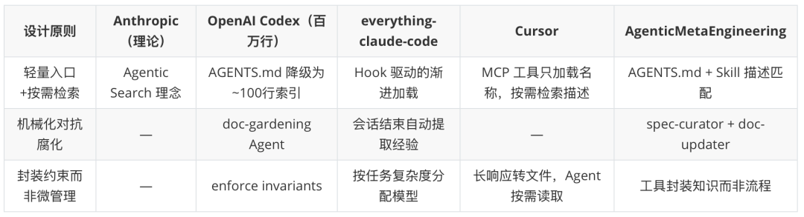
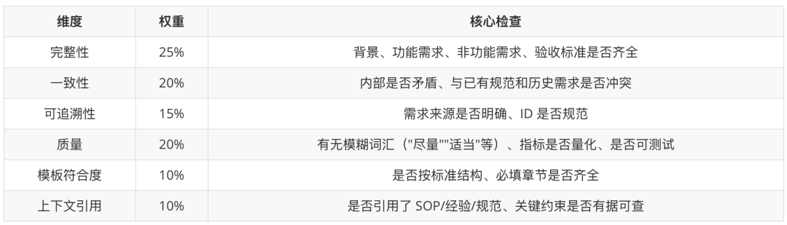

作者：rickyshou
从 speckit 踩坑到认知重建，从推翻精密架构到一个 AGENTS.md 文件重新出发。这篇讲的是"我做了什么，以及它为什么有效"。一个 AGENTS.md 文件，两个月后长成了拥有 22 个 Agent、27 个 Skill、28 个命令的工程体系。它不是设计出来的，而是被真实需求一步步逼出来的——中间经历了场景路由的建设与推翻、方法论的沉淀、多 Agent 协同代码审查的实战、运营活动配置的端到端落地，以及从一个人用到一个团队用的完整过程。如果你正在思考"AI 辅助开发到底能走多远"，这篇文章给出的不是理论答案，而是一份带着所有弯路和修正的实践记录。
一、从 Vibe Coding 到 Agentic Engineering：一个概念的诞生
1.1 Karpathy 的一条推文
2025 年 2 月，Andrej Karpathy 随手发了一条推文，发明了一个词：Vibe Coding（氛围编程）。
"我发明了一种新的编程方式，我称之为'氛围编程'。你完全沉浸在氛围之中，拥抱指数级增长，甚至忘记代码的存在……我总是'全部接受'，不再看差异对比。遇到错误信息时，我直接复制粘贴进去，不加任何注释，通常这样就能解决问题。"
这条推文火了。不是因为它严谨，恰恰因为它说出了很多人心里的真实状态——AI 写代码已经"够用"了，你只需要看看、说说、跑跑、粘贴粘贴，大部分时候它就是能工作。
一年后，2026 年 2 月，Karpathy 回顾这条推文时，说了一段更值得注意的话：
"如今，通过 LLM 智能体进行编程正日益成为专业人士的默认工作流程，只不过监管和审查更加严格。其目标是在不牺牲软件质量的前提下，充分利用智能体的优势。许多人试图为这种方法想出一个更好的名称，以区别于 Vibe Coding，我个人目前最喜欢的是 Agentic Engineering。"
他给出了两个理由：
Agentic——因为 99% 的时间你不再直接写代码，而是协调智能体并进行监督 Engineering——因为这是一门有深度的学科，有其自身的艺术、科学和专业知识，可以学习和精进
看到这条推文的时候，我并不觉得这是一个新概念。
因为在 Karpathy 发这条推文的一个月前——2026 年 1 月 2 日凌晨——我已经提交了 AgenticMetaEngineering 项目的第一个 commit：feat: 初始化 AgenticMetaEngineering 项目结构和上下文管理规范。
名字里就有 Agentic Engineering。不同的是，我多加了一个 Meta。
为什么是 Meta？因为那时候我已经想清楚了一件事：Agentic Engineering 本身也需要被工程化。 让 AI Agent 真正进入业务研发，不是给它一个提示词就行的，有很多工程基础设施需要提前准备——这些基础设施的设计、构建和迭代，就是"元工程"（Meta Engineering）：
长时间跨会话执行任务——Agent 做到一半会话断了怎么办？状态怎么恢复？ 工具调用能力的评估体系——Agent 调用工具的准确率、可靠性如何量化？ 上下文的系统化管理——Agent 在正确的时刻能拿到正确的信息吗？ 知识的持续沉淀机制——Agent 这次踩的坑，下次能自动避开吗？
这些不是"用 AI 写代码"的问题，而是"让 AI 可靠地写代码"之前必须解决的工程问题。
Karpathy 的推文真正的价值，不在于发明这个概念，而在于让它被广泛认识。当一个被大众熟知的人说出这个词，它就从少数实践者的内部术语变成了行业共识。这对所有在做同样事情的人来说是好事——你不再需要花 10 分钟解释"你到底在做什么"。
1.2 什么是"Agentic"？一个光谱而非二元定义
Karpathy 给了这个词一个名字，但"Agentic"到底意味什么？LangChain 创始人 Harrison Chase 在 What is an AI Agent? 一文中给出了一个更具技术洞察力的视角。
他引用 Andrew Ng 的观点：与其争论哪些系统算"真正的 AI Agent"，不如承认系统的"Agentic 程度"是一个光谱。 就像自动驾驶有 L1 到 L5 的分级，AI 系统的自主程度也有不同层级：
Agentic 光谱（由低到高）：
Router → LLM 决定输入走哪条路径
（少量自主性）
State Machine → 多步路由 + 循环决策，直到任务完成
（中等自主性）
Autonomous Agent → 自主构建工具、记忆经验、持续进化
（高度自主性）
Chase 的核心观点是：一个系统越"Agentic"，就越需要新的工具和基础设施来支撑它——包括编排框架、持久化执行、运行时观测、评估体系，以及全新的监控方式。
这和我的实践体验完全吻合：当你从"一个 AGENTS.md 文件"演进到"22 个 Agent 协同工作"时，真正的挑战从"怎么写提示词"变成了怎么让这些 Agent 可靠地运行、有效地协作、持续地进化。
1.3 我的理解：Agentic Engineering 是什么
在构建工程体系的实践过程中，我自己也独立推演出了类似的认知。
2026 年 1 月初，我写了一篇内部文档 《Agentic 工程演进：从对话到自主》，从第一性原理出发，梳理了 AI 辅助编程从"简单对话"到"Agentic 工程"的五个阶段演进。核心框架是两个相互推动的维度：
横轴（工具能力）：LLM API → 聊天页面 → 简单 Agent → 编码 Agent → 团队定制化 Agent 纵轴（任务复杂度）：简单对话 → 代码补全 → Vibe Coding → SDD 脚手架 → Agentic 工程
两个维度的交汇构成了一张完整的演进地图：

这不是看了谁的文章之后的"学习笔记"，而是在实际构建过程中被一个个具体问题逼出来的认知：上下文膨胀了怎么办？跨会话丢失状态怎么办？同样的坑反复踩怎么办？每个问题的解法叠加起来，自然指向了一个工程化的方向。Chase 早在 2024 年 6 月就提出了"agentic"这个光谱概念，Karpathy 在 2026 年 2 月给了它一个更广为人知的名字——概念和命名各有先后，但对于实践者来说，这条路是被真实问题推着走出来的。
基于这些实践，我对 Agentic Engineering 的理解是：
Agentic Engineering 是一种工程范式：人从"代码编写者"转变为"Agent 协调者"，通过系统化的上下文管理、知识沉淀和流程设计，让 AI Agent 具备自主性、记忆力和成长性，在不牺牲质量的前提下实现工程效率的复利增长。
它不是 Vibe Coding 的对立面，而是 Vibe Coding 的工程化演进——保留"让 AI 做事"的杠杆效应，补上"质量保障"和"知识复利"两块拼图。
这篇文章要记录的，就是这个演进过程是如何在一个真实团队中，围绕活动业务的工程化改造一步步发生的。
1.4 同路人的印证：everything-claude-code 的十个月实践
在讲我自己的故事之前，先介绍一个外部案例——它说明 Agentic Engineering 不是某个人的发明，而是一种正在独立涌现的工程范式。
体系基本成型后，我在 2 月关注到了 @affaanmustafa（cogsec）的 everything-claude-code 仓库和他的长文分享。这个仓库来头不小——作者是 Anthropic 黑客马拉松的获胜者，从 2025 年 2 月 Claude Code 实验性发布起就开始深度使用，经过 10 个多月的密集日常使用，演化出了一套包含 13 个 Agent、43 个 Skill、31 个命令的生产级配置集合。
看到他们的实践时，我的第一反应不是"学到了新东西"，而是"原来有人在同一条路上走了十个月，而且到了类似的地方"。他们的体系覆盖了几个关键维度，和我独立演化出的方向高度吻合：

他们的原话精准地描述了共同的痛点：*"你的皮质醇飙升，愤怒地对 Claude 大喊不要做某件事——而你已经在上一个会话中告诉过它了。"* 这正是我在体系中用规范文档和经验沉淀机制要终结的循环——而他们用会话结束时的自动经验提取来解决同样的问题，路径不同，目标相同。
真正让我有共鸣的是他们对复利效应的理解：*"Early on, I spent time building reusable workflows/patterns. Tedious to build, but this had a wild compounding effect as models and agent harnesses improved."*（早期花时间构建可复用的工作流和模式，建设过程很枯燥，但随着模型和智能体框架的进步，这产生了疯狂的复利效应。）在第一篇文章中我详细介绍过，复利工程（Compounding Engineering）这个理念源自 Claude Code 团队与 Every 团队的实践交流，并在 Every 团队开源的 Compound Engineering Plugin 中得到了系统化实现——如今在一个完全独立的体系中看到同样的复利逻辑，进一步印证了这条路的可行性。今天投入的每一个 Skill、每一条规则、每一份经验文档，都在为明天的效率买单。
1.5 不是银弹：独立演化的必要性
但我想强调一点：everything-claude-code 不是我的体系的蓝图，我也没有参考他们的具体设计。AgenticMetaEngineering 的 22 个 Agent、27 个 Skill 是在解决活动业务问题的过程中独立"长"出来的，不是照着别人的配置搭建的。
他们自己在 README 的最后也明确说了：*"These configs work for my workflow. You should start with what resonates, modify for your stack, remove what you don't use, add your own patterns."*
这段话印证了第二篇文章的核心观点——没有一个"最佳配置"适合所有人。 AgenticMetaEngineering 中默认启用了 TAPD 的 MCP（对接内部项目管理）、企微的消息推送（Agent 完成任务后自动通知到个人）、内部的 QTA 单元测试插件——这些都是我们团队工作流中不可或缺的基础设施，但在 everything-claude-code 里你找不到任何一个，因为它们是企业内部工具，只有在你的真实业务场景中才有意义。反过来，他们体系中的一些配置（比如面向个人开发者的 GitHub MCP 替代方案），在我们的企业环境里也并不适用。工程体系必须从自己的土壤里长出来。
当然，独立演化不意味着闭门造车。他们体系中好的设计思路——比如 Hook 驱动的记忆持久化、会话结束时的自动经验提取——这些都值得后续融入进来，为 AgenticMetaEngineering 补充更多能力。
两个独立演化的体系在核心理念上高度趋同，这本身就说明了一件事：Agentic Engineering 不是某个人的发明，而是一种工程范式的自然涌现。 当你认真地让 AI Agent 进入真实的工程实践，你最终会被同样的问题逼到同样的方向上——记忆、学习、验证、复利。（第三章 3.6 节会结合 OpenAI Codex 团队等更多独立实践展开论证。）
接下来的章节，记录的就是我在自己项目中独立走出这条路的过程。
二、回顾：从认知到行动的断层
2.1 前两篇建立的认知基础
在第一篇文章里，我记录了从 speckit 踩坑到认知重建的过程，建立了三个核心认知：
上下文工程：AI 的能力上限取决于你给它的信息——完整性和信噪比决定一切 复利工程：让每次实践产生复利，边际成本递减，而非每次从零开始 极简主义：先跑起来，让具体问题驱动演进，而非预先设计完美架构
在第二篇文章里，我们推翻了精密架构，从一个 AGENTS.md 文件重新出发。那篇文章的结尾，我们有了一个能跑起来的最小工程——一个文件，几条规则，一个方向。
这三个认知是正确的。但正确的认知不等于可执行的方案。
2.2 第一个坑：用传统软件设计思维来设计 Agent 体系
第一篇文章发出时，我手里已经有了第一版 demo——基于第一篇的认知搭建的初始工程。接下来的迭代过程中，我本能地用了最熟悉的设计方法：领域驱动设计（DDD）。 第二篇文章正是在这段迭代中写的——它记录了我们如何从三层架构、九步工作流、多 Agent 编排的"精密设计"中清醒过来，受 NotebookLM 和 Claude Code 的极简理念启发，推翻全部架构，回归到"一个 AGENTS.md + 结构化知识"的起点。
这个思路很自然——DDD 是应对复杂业务系统的成熟方法论：划分限界上下文、定义聚合根、设计领域事件、通过接口契约解耦模块。既然 Agentic Engineering 也是一个复杂系统，为什么不能用 DDD 来设计它？
从 v0.1 到 v0.7，我反复尝试用 DDD 的方式划分 Agent 的职责边界、定义 Skill 之间的调用契约、设计知识的分层架构。每一版都比上一版"更完整"，但每一版在实际使用中都不对劲——Agent 不按你设计的边界行动。
最终才意识到根本性差异：传统代码写了就确定性运行，Agent 的行为取决于上下文。
用 DDD 设计微服务时，你可以精确定义一个接口：输入什么类型、输出什么类型、异常怎么处理。写完代码，部署上去，它就按你定义的方式运行。但 Agent 不是这样——同一个 Skill，给它完整的项目知识，它能一次做对；给它空的 context/，它就开始幻觉。同一个 Agent 定义，上下文窗口里塞了太多规则，它反而"走神"；精简到关键信息，它又表现正常。Agent 的"接口"不是函数签名，而是上下文窗口里的信息组合。这个"接口"是动态的、概率性的，没法用 DDD 的确定性边界去约束。
v0.7 之后我放弃了 DDD 路径，推翻之前的设计，建了当前这个全新的仓库。这个认知直接影响了后续所有的设计决策：不追求精确的模块划分和接口定义，而是围绕上下文的组织、流转和质量来构建体系——这就是第三章开始的故事。
这个认知断层还延伸出两个工程化问题，最终都指向了同一个答案。
问题一：体系怎么升级？
传统工具的升级路径是"发布新版本→用户更新插件"。但 Agentic Engineering 的核心资产是什么？Skill 定义、Agent 配置、context/ 里的知识、门禁规则——全是文本文件。升级一个 Skill 的行为，本质上是修改一个 Markdown 文件；调整一条门禁规则，本质上是编辑一个 JSON。
这意味着 git 就是天然的升级机制。git pull 完成升级，git diff 看到每一行变化，git merge 处理冲突。不需要版本号、不需要发布流程、不需要兼容性矩阵。当体系的核心资产是文本而非编译后的二进制时，版本控制工具本身就是最好的分发和升级系统。
问题二：最佳实践怎么推广？
传统的推广靠文档、培训、分享会——信息从"知道的人"单向传递到"不知道的人"。但在单仓库模式下，团队内其他项目的做法就在仓库里：context/project/A/ 是 A 项目的知识积累，context/project/B/ 是 B 项目的知识积累，requirements/ 里是每个需求的完整产出物。
Agent 可以直接读取其他项目的实践——"B 项目在做接口对接时是怎么处理鉴权的？搜一下 context/project/B/"。不需要找人问、不需要等分享会、不需要翻文档。项目间的经验差距，被 Agent 的检索能力直接抹平了。 一个项目踩过的坑沉淀到仓库里，其他项目的 Agent 下次就能直接引用。
两个问题，同一个答案：单仓库 + git + Agent 的检索能力，天然解决了升级和推广这两个传统工程化难题。 这不是刻意设计的——是当你把体系的核心资产从"代码"变成"知识文本"之后，自然获得的工程化优势。
2.3 "知道"之后的真实困境
从一个 AGENTS.md 开始，我手里有了方向。但认知和行动之间的鸿沟真实存在。
困境一：什么时候该加东西？
从一个 AGENTS.md 起步，"然后呢"是一个完全开放的问题。AI 第一天就开始犯错——没有记忆、没有经验、每个会话从零开始。你知道应该"让具体问题驱动演进"，但面前有十个方向可以走，每个方向都有合理的理由。
一个真实的例子：我让 Agent 用 Playwright 做页面验证，每次它都老老实实地打开浏览器、登录、操作、关闭浏览器。下一个任务又打开浏览器——又要重新登录。内部平台的登录流程涉及多步鉴权，每次重新走一遍既慢又脆弱。解法其实很简单：告诉 Agent "不要关闭浏览器，用新增 Tab 来切换任务"。但这条规则该写在哪里？写进 AGENTS.md？单独建一个 Playwright 使用规范？还是先忍着每次手动提醒？全都做是过度设计，只做一个可能选错。"极简主义"告诉你不要过度设计，但没告诉你最小可行的下一步是什么。
困境二：第一个复利的种子是什么？
复利工程的前提是"有东西可以复利"。但第一个需求做完，我手里的产出物不少——需求文档、概要设计、详细设计、笔记、进度日志、评审报告——问题是，这些都是为当前需求服务的。真正能跨需求复用的经验性知识，被锁在了这些一次性文档的字里行间。哪些该提取出来？提取到哪里？用什么粒度？
做完运营活动配置的第一个需求后，我列了一下过程中反复出现的信息：雅典娜平台的商品创建流程、Apollo 配置的 When-Then 规则格式、奖品库存锁定的先后顺序、活动模板和玩法模板的对应关系。这些信息虽然都在会话中出现过，但经过多次上下文压缩后早已丢失。
你知道应该沉淀，但立刻面对一个粒度选择：拿 Apollo 配置来说，是记一句"Apollo 有特殊的 When-Then 格式"？太粗了，下次 Agent 还是写错。还是把完整的语法规则、字段枚举、常见错误全部写下来？太细了，下次需求可能根本不涉及 When-Then。四类信息，每类都有这个粒度困境，而你没有任何经验判断"下次会用到哪些"。你知道"应该积累"，但不知道"积累什么、怎么积累、积累到什么粒度"。
困境三：一个人的效率提升不等于团队的效率提升。
自己用得顺手了，下一步是什么？让同事也来用？但团队里的人处在不同的起点上。
已经有过 Vibe Coding 经验的同事，上手后反馈不错——他们知道怎么和 AI 对话，缺的只是体系化的规范和工具，这套框架正好补上了。但对于连 Vibe Coding 都还没怎么接触的同事来说，问题根本不在"体系怎么用"，而在提示词不知道怎么写。你给他一个 /requirement:new 命令，Agent 问他"请描述你的需求"，他对着输入框发愣——不是不知道需求是什么，是不知道用什么粒度、什么结构、什么语气去"说"给 AI 听。这时候你才发现，你的体系预设了"用户至少会和 AI 对话"这个前提，而这个前提在团队里并不普遍成立。 从"我在用"到"我们在用"之间，隔的不只是工具使用的知识传递，还有一层更基础的——和 AI 协作的基本能力。
这三个困境不是理论问题，而是我在建设过程中真实面对的处境。它们也不是孤立的——困境一不解决，困境二就没有方向；困境二不解决，困境三就没有内容可传递。它们构成了一个环环相扣的链条：
困境一（何时加）→ 困境二（加什么）→ 困境三（怎么让别人也能用）
↑ |
└────── 别人用不了，反馈你才知道该加什么 ──┘
于是我选了最可控的路径：自己边用、边体验、边优化——先把自己当作第一个用户，在迭代工程体系的过程中反复碰壁、反复修正。
接下来的章节，记录的就是我从 1 月到 2 月，把 AgenticMetaEngineering 从一个 AGENTS.md 文件"长"成一个拥有 22 个 Agent、27 个 Skill、28 个命令的工程体系的过程——每一步都是在回答上面的困境。
三、在我的项目中如何落地：一个体系的自然生长
好的工程体系不是设计出来的，是"长"出来的。每一个 Agent、每一个 Skill 都是在解决业务问题的过程中被逼出来的。
在讲演进故事之前，先说一个前提认知。
CodeBuddy、Claude Code 这类工具，本质上是擅长使用计算机的通用智能体。它们能读写文件、执行命令、调用 API、搜索代码——这些是"会用电脑"的能力。但"会用电脑"和"会做研发"是两件事。
一个新入职的工程师，即使电脑操作再熟练，也需要了解团队的分支策略、代码规范、评审流程、需求管理方式，才能真正融入协作。AI Agent 也一样。它缺的不是操作能力，而是研发团队约定俗成的规范和流程——代码怎么组织、需求怎么流转、方案怎么评审、质量怎么把控。
所以，从通用智能体到能真正承担研发工作的 Agentic Engineering，中间要补的就是这层团队研发知识。下面的演进过程，本质上就是我一步步把这些隐性的研发规范显性化、结构化，最终让 AI 能像一个"了解团队规矩的同事"一样工作的过程。
3.1 阶段一：一个文件的起步（1月初）
2026 年 1 月 2 日凌晨，第一个 commit 落地：feat: 初始化 AgenticMetaEngineering 项目结构和上下文管理规范。
那时候整个体系就是一个 AGENTS.md 文件——定义了 Agent 的角色、几条基本规则、目录约定。仅此而已。然后用它来做第一个自建需求：插件市场的开发。
从第一篇文章的认知出发，我知道上下文工程、记忆持久化、经验沉淀这些事迟早要做。但从第二篇文章的教训出发，我刻意控制了自己"一步到位"的冲动——不是不知道要做，而是不确定现在做是不是过度设计。 所以策略很明确：先让 AI 按照最简单的规则跑起来，等到真正"不得不做"的时候再做。
预期中的问题很快就出现了：
AI 每次做需求都要从头问一遍业务背景——它没有记忆 上次踩的坑这次又踩了——经验没有沉淀 做到一半会话断了，恢复时完全不知道做到哪了——没有状态持久化
这些问题不意外，但它们在同一天之内集中爆发，明确了一件事：现在就是"不得不做"的时候了。 一个文件起步是对的，但一个文件不够用——不是设计失败，而是演化的信号到了。
3.2 阶段二：目录结构的自然涌现（1月上旬）
既然 AI 没有记忆，那就给它造一个。
第一个"涌现"的目录是 context/——最初就是一个放文档的地方。但很快它自然地分化出了两个层次：
团队级知识（context/team/）：所有项目通用的规范和流程——需求怎么写、方案怎么做、代码怎么审 项目级知识（context/project/）：特定项目的架构设计、业务知识、技术选型依据
这个分化不是我画了架构图然后实现的，是因为我发现有些规范每个项目都在重复写，有些则只对特定项目有意义。把它们放在不同的位置，AI 就能根据当前项目按需加载。
第二个"涌现"的目录是 requirements/。最初只是为了保存需求文档，但做了几个需求后发现它自然演化出了固定结构：
requirements/{id}/
├── meta.yaml ← 元信息：需求在哪个阶段、关联什么服务
├── plan.md ← 计划：这个需求要做什么、分几步
├── process.txt ← 进度：做到哪了、遇到了什么阻塞
└── notes.md ← 笔记：过程中发现的经验、待沉淀的知识
每个文件的出现都有对应的痛点：process.txt 是因为跨会话恢复时 AI 不知道之前做到哪了；notes.md 是因为过程中发现的好经验没地方记，等回头想整理时已经忘了。
这个阶段最重要的认知是"位置即语义"——不需要复杂的元数据系统，文件放在哪个目录，AI 就知道它是什么。这比任何数据库或索引机制都简单、都可靠。
3.3 文档即记忆：一个有意的设计选择
当 context/ 和 requirements/ 的结构逐渐稳定下来后，我发现它们已经构成了一个完整的记忆系统——这不是"无意中长出来的"，而是从一开始就有意参考了 Anthropic 在上下文工程中提出的 Agentic Search 思路。
Agentic Search 的核心理念是：维护轻量级的索引和标识符，让 Agent 在运行时根据当前任务动态检索，而不是把所有知识预加载到上下文里。 就像一个资深工程师不需要背手册，只需要知道"要查什么"和"去哪查"。这个理念直接影响了整个目录结构的设计决策——context/ 的分层、requirements/ 的固定结构、INDEX.md 索引文件的引入，都是在为 Agent 构建一套"知道去哪找"的记忆检索体系。
具体来说，这套记忆系统分为三层：
长期记忆（容量无限，按需检索）
├── context/ ← 知识库：团队规范、项目知识、经验文档
├── skills/ ← 能力封装：可复用的专业技能
└── requirements/ ← 历史资产：已完成需求的全部产出物
溢出区（会话中断时的"存档/读档"）
├── process.txt ← 做到哪了、遇到了什么阻塞
├── notes.md ← 过程中发现的经验、待沉淀的知识
└── plan.md ← 当前计划和决策记录
工作记忆（容量有限，需要精细管理）
└── 运行时的对话上下文
长期记忆持久化在文件系统中，工作记忆是运行时对话上下文，中间的"溢出区"解决的是一个具体问题——会话中断时关键状态溢出到文件中，下次恢复时读回来。本质上就是游戏的"存档/读档"。
但真正让这个记忆系统区别于"又一个知识库方案"的，是一个更深层的选择：为什么是文档，而不是数据库或向量存储？
第二篇文章中我提出过一个原则："文档即记忆"——同一份文档，人类和 AI 都能读懂、都能用。这不只是工程上的简化，而是关于知识一致性的选择。当团队的知识存在两套体系——人读人的、AI 读 AI 的——就不可避免地出现版本漂移：人更新了规范但忘了同步到 AI 的知识库，AI 的向量索引里还是旧的理解。文档形态天然避免了这个问题，因为人和 AI 读的是同一份文件。
更重要的是，文档形态有一个独特的优势：高频使用对抗腐化。传统文档最大的问题是写了没人看、看了不更新，最终变成僵尸文档。但当文档同时作为 AI 的记忆时，它在每一次 Agent 执行任务时都被"读取"和"使用"。文档过时了，AI 行为就会出错，开发者立刻发现并修正——这形成了一个天然的反馈环。文档不再是被动的参考资料，而是每天都在被消费的"活的记忆"。
这套记忆系统还解决了团队协作中一个根本性的问题：知识对齐。当整个团队共享同一套 context/ 目录时，所有人的 AI 都基于相同的记忆工作。新人 clone 仓库那一刻，就获得了团队积累的全部知识资产。这比任何 Wiki 或 Confluence 都高效——因为它不只是"可以看"，而是"必须用"。
3.4 阶段三：场景驱动的规范体系（1月中旬）
随着规范越来越多，一个新问题浮出水面：Agent 同时面对太多约束，行为开始不稳定。
Anthropic 在 Building Effective AI Agents 一文中给出了一个关键指导原则："finding the simplest solution possible, and only increasing complexity when needed"（找到最简单的可行方案，只在必要时增加复杂度）。其中介绍的 Routing 工作流——"classifies an input and directs it to a specialized followup task"——给了我直接的启发。
这个思路的核心是：如果用户面向的是 Agent，那么应该给 Agent 最小的约束。 规范越少，Agent 越不容易"走神"；约束越精确，行为越可预期。当时场景还不多，规范也在可控范围内，用路由模式返回最小约束集合是一个合理的选择。
于是我做了一个决策：引入场景驱动架构，用路由机制实现最小约束。
核心思路——按场景隔离规则，只返回当前场景需要的最小约束集：
用户意图 → 场景识别 → 加载该场景的最小规则集 → 执行任务
我设计了一套完整的场景体系：普通场景（代码探索、需求定义、方案设计等）、流程场景（需求开发、规范维护等编排多步骤的流程）、辅助场景（阶段检查点、进度日志等被动引用的支撑能力），再加上横切规则（跨场景通用的行为约束）。
关键组件是 engineering-spec-retriever 路由 Agent——一个专门负责"搜索当下 Agent 应该遵循哪些规范"的子代理。主 Agent 识别到用户意图后，调用这个路由 Agent 检索对应场景的规范，只返回一份精简的可执行清单。这样主 Agent 的上下文中只有当前场景所需的最小约束，不会被无关规范干扰。
这套架构完全遵循了 Anthropic 的指导——在每个时刻，Agent 只看到它需要看到的规则。我为它写了完整的设计文档，包括场景分类、路由机制、流转规则、扩展指南。在场景较少的早期阶段，它运行得很好。
3.5 阶段四：推翻场景路由，转向工具设计（1月下旬）
转折点发生在一个具体的下午。我让 Agent 做一个常规的需求定义任务，它先是调用路由 Agent 检索到"需求定义"场景的规范，然后开始工作。做到一半我说"顺便看看相关代码的现有实现"，Agent 又调了一次路由，拿回"代码探索"场景的规范。两份规范加上横切规则，上下文已经占了大半。当我接着说"根据代码现状修改方案"时，第三次路由把"方案设计"场景的规范也拉了进来——Agent 开始"走神"了：它跳过了需求定义阶段的必填项，把方案设计的格式套到了需求文档上。三个场景的规范互相干扰，Agent 的行为完全不可预期了。
这不是个例，而是系统性问题的集中爆发。
先澄清一点：三层架构——团队智能体层、平台能力层、基础设施层——从项目初期就是这个基础结构，场景驱动阶段也是在这个骨架上做的。真正出问题的不是三层架构本身，而是场景路由这个核心机制。
场景驱动架构在早期运行良好——场景少、规范少、路由准确。但随着场景和上下文的持续增长，一个根本性问题浮出了水面：上下文腐烂（Context Rot）。
场景越来越多，每个场景的规范也在膨胀。路由 Agent 检索回来的"最小约束集"已经不再"最小"了——场景分类本身需要描述信息，路由规则需要上下文，检索结果需要格式化返回，再加上场景间的横切规则……所有这些元数据本身就在侵蚀上下文空间。
即使使用 Opus 4.5 模型（当时 Anthropic 最新最强的模型），Agent 的行为也开始出现明显的"走神"——指令遗忘、规范误读、步骤跳过。这不是偶发现象，而是随着场景复杂度增长的系统性退化。
Anthropic 那套"最小约束"的指导原则本身没有错，错在我选择的实现路径：用一个动态路由系统来实现最小约束，路由系统本身就成了新的上下文负担。场景驱动架构的讽刺之处在于——它为了减少上下文噪音而引入的机制，最终成了最大的噪音源。
除了核心的上下文腐烂问题，还有两个次要但真实的痛点：
场景边界模糊：真实的用户意图往往横跨多个场景。"我在做需求，顺便看看代码实现，然后修改方案"——这到底是需求定义场景、代码探索场景还是方案设计场景？ 维护成本递增：场景路由表、场景识别信号、场景规则……维护这套元数据本身就变成了一个负担。我在"让 AI 更高效"的路上，造了一个需要大量人工维护的系统。
这和第二篇文章里 speckit 的教训本质相同——过度抽象反而增加了复杂度。但这次我学到了更深一层的教训：在 LLM 系统中，任何你引入的"管理机制"都会消耗上下文空间，而上下文空间就是 Agent 的认知带宽。 管理机制的收益必须大于它消耗的认知带宽，否则就是净亏损。
于是我做了一个在工程师看来很"痛"的决定：把整套场景体系降级为归档文档，重新思考"最小约束"的实现方式。
问题的根源是"让 AI 在运行时动态识别场景"这个思路本身。场景路由试图在每次交互时动态决定"该加载哪些规范"，但这个决策过程本身就消耗了大量上下文。真正需要推翻的不是三层架构，而是用动态路由实现最小约束这条路径。
答案藏在平台层已经提供的扩展机制里——CodeBuddy / Claude Code 原生支持 Command（命令）、Skill（技能）、Subagent（子代理）、Hook（钩子）、Plugin（插件）、MCP（模型上下文协议）。之前我把注意力全放在"怎么让 AI 在运行时猜对场景"上，忽略了一个更朴素的思路：把能力封装成结构化的工具，让 Agent 按需调用。
这里的关键认知是：Skill 和 Subagent 本身就带有描述信息，平台可以根据描述自动匹配和触发。Agent 不需要额外的路由系统来"发现"这些工具。但仅靠描述信息的自动匹配，调用的稳定性并不够——Agent 可能在不该调用的时候调用，或者调用了但用法不对。AGENTS.md 和相关文档的作用，是强化了"何时使用"和"如何使用"这些工具的指引，提高了 Skill 和 Subagent 调用的稳定性和准确性。 同时，Command 把系统具备的能力显式地暴露给用户，降低了意图输入的成本——/requirement:new 和"帮我新建一个需求"触发的是同一套流程，前者更快、更确定，后者更自然。
场景路由的问题是把"理解意图"和"加载规范"耦合在一起，用一个动态路由系统同时完成两件事，结果两件事都做不好。工具设计把它们解耦了：
场景路由（推送模式）：
用户意图 → 路由 Agent 检索 → 返回规范集（全量推入上下文）
问题：路由本身消耗上下文，规范越多噪音越大
工具设计（拉取模式）：
用户意图 → 平台根据描述自动匹配工具 → 调用时才加载领域知识
优势：调用前上下文干净，调用后只加载当前工具需要的知识
工具本身通过描述信息完成匹配，AGENTS.md 强化调用时机和使用方式，工具内部封装领域知识（调用后才加载上下文）。 场景路由是在每次交互时给 Agent 塞一堆"你可能需要的规范"，工具设计是让 Agent 在需要时自己去拿——前者是推送，后者是拉取，后者的上下文效率高得多。
3.6 多方收敛：不是个人发明，是范式涌现
回头看 3.1 到 3.5 的演进，我一度以为这些弯路和结论只是个人经验。但在体系基本成型后，我发现至少五个独立的实践在同一时期走到了几乎相同的地方。
OpenAI 的 Codex 团队在 "Harness engineering: leveraging" 一文中复盘了用 Agent 从零构建百万行代码产品的五个月经验。他们也尝试过"一个大 AGENTS.md"方案，也失败了——*"too much guidance becomes non-guidance"*。他们的解法也是把 AGENTS.md 降级为索引（约 100 行），知识库拆分到结构化目录，按需检索。他们管这叫 "progressive disclosure"（渐进式披露），和我从 Agentic Search 出发走到的架构几乎相同。
在对抗知识腐化上，他们用 "doc-gardening" Agent 定期扫描过时文档并自动提 PR 修复；我用 engineering-spec-curator 和 documentation-batch-updater 做同样的事。在约束执行上，他们的原则是 *"enforce invariants, not micromanage implementations"*——和我在工具设计规范中提出的"封装知识而非流程"一脉相承。更有趣的是一个细节：他们把自定义 lint 的错误信息写成 Agent 的修复指导——把约束和修复指引绑定在同一条反馈链路上。
加上第一章介绍的 everything-claude-code（1.4）——一个独立实践者十个月演化出的平行体系，在记忆、学习、验证、复利四个维度上与我们高度趋同。
Cursor 的做法也印证了同一方向。他们的动态上下文发现策略和我们的记忆系统设计高度一致：工具输出过长时写入文件，Agent 用 tail 按需读取（长响应转文件）；MCP 工具只加载名称，详细描述存文件夹按需检索——token 消耗减少 46.9%；技能描述作为静态上下文，详细内容动态发现。这就是 Agentic Search 的工程化实现——轻量入口 + 按需深入，和我们在 Skill 设计中"SKILL.md < 2k token 进入上下文，详细内容拆到 resources/"是同一个思路。
为什么这些独立实践会收敛到同一个架构？ 因为它们都在回应同一个理论洞察。Anthropic 在上下文工程中提出 Agentic Search 的理念：维护轻量级索引，让 Agent 动态检索而非预加载。Claude Code 把这个理念落地为平台能力——AGENTS.md 作为入口、Skill/Subagent 的描述信息自动匹配、渐进式上下文加载。OpenAI 的 Codex 团队用 "progressive disclosure" 在百万行代码规模上验证了同一架构的可行性。而我在 Agentic Engineering 中把它扩展到了完整的软件工程生命周期——从需求到代码审查到知识管理，每一层都遵循"轻量入口 + 按需检索 + 机械化对抗腐化"。这不是巧合，而是 Agentic Search 作为当前最优实践的多方印证。
五个独立的实践——Anthropic 的理论框架、OpenAI 的百万行代码实践、everything-claude-code 的社区演化、Cursor 的动态上下文策略、我的全生命周期工程体系——从不同规模、不同工具链，收敛到了同一组设计原则：

上下文稀缺性是底层物理约束，渐进式披露是应对它的最优解，机械化强制执行是让方案长期可持续的必要条件。 这种多方收敛本身说明：这些不是个人偏好，而是 Agent 协作的底层规律。
四、方法论：从"能力封装"到"工程标准"
> 前面讲了从一个文件到推翻场景路由的演进故事。推翻之后不是一片空白——场景分析的结构化认知沉淀了下来，成为工具设计的蓝图。这一章讲的是：如何把这些认知固化为可重复的方法论和设计标准。
4.1 场景沉淀为工具设计的蓝图
推翻场景路由不等于推翻场景本身。场景体系建设过程中积累的结构化分析——每个场景的识别信号、规则集合、关联知识、预期产出——恰好成了工具设计的蓝图：

场景路由作为运行时机制被推翻了，但场景分析作为设计方法论沉淀了下来。这个过程的生命周期不是"建设→推翻→浪费"，而是 "建设→积累结构化认知→固化为可重复的设计输入"。
4.2 工具设计规范：Command、Skill、Subagent
有了蓝图，下一个问题是：怎么保证每个工具的设计质量？
最初几个 Skill 和 Subagent 是"怎么好使怎么写"。但很快我就发现了问题——不同时期写的工具风格不一致，有的 Skill 把所有内容塞在一个文件里（上下文爆炸），有的 Subagent 返回一大段原始数据（污染主对话），有的 Command 复制了 Skill 的全部执行步骤（改一处忘改另一处）。
这些问题逼出了三份工具设计规范，分别定义了 Command、Skill、Subagent 的核心约束：
Command：意图快捷入口，不是流程执行器。
它只做两件事——预检和委托。/requirement:new 不会自己执行创建需求的全部步骤，而是检查前置条件后声明"使用 managing-requirement-lifecycle Skill，执行新需求启动流程"。硬约束是 < 100 行指令。为什么要这样分？因为同一领域的多个命令——/requirement:new、/requirement:continue、/requirement:next——它们背后共享同一套领域知识。如果每个 Command 都把逻辑重复写一遍，改一条规则要同时改七个文件。把领域知识收敛到 Skill 中，Command 只做薄层入口，维护成本从 O(n) 降到 O(1)。
Skill：专业知识包，不是脚本执行器。
默认假设 Claude 已经很聪明，只添加它没有的信息。Skill 有三种内容类型——指令（灵活指导）、代码（确定性操作）、资源（模板和参考资料）。最关键的硬约束是渐进式披露架构：SKILL.md < 2k token 进入主对话上下文，详细内容拆分到 resources/ 目录，所有引用"一跳可达"——从 SKILL.md 直接链接到资源文件，不允许深层嵌套。这和 3.3 提到的 Agentic Search 是同一个思路：给 Agent 一个入口，让它按需深入，而不是预加载所有内容。
Subagent：独立上下文中的专业同事，不是被动的脚本执行器。
两条最关键的硬约束：返回内容 < 2k token（保护主对话上下文），禁止嵌套调用（Subagent 之间不相互调用，协调由主 Agent 完成）。Subagent 按任务类型分为五类——初始化类（创建资源，用低成本模型）、准备类（收集信息）、评审类（评估质量，用高能力模型）、执行类（生成代码）、维护类（更新文档）。不同类型推荐不同的模型，这让一次完整的代码审查既全面又经济。
三份规范的共同主线是一个设计哲学：工具应该封装知识而非流程，给 Agent 自由度而非脚本。 告诉它"做什么"和"注意什么"，而不是"第一步做什么、第二步做什么"。这和场景路由时代"把规范塞给 Agent"的思路是根本性的不同——规范是外部施加的约束，工具是内化的能力。
4.3 SOP：把迭代本身标准化
有了工具设计规范，单个工具的质量有了保障。但更大的问题是：整个体系怎么持续迭代？ 不只是"什么时候该加工具"，而是更根本的问题——用户需要新能力时怎么办？Agent 行为出错了改哪里？业务场景变了怎么调整？改完一处要同步改什么？
答案是项目迭代 SOP。SOP 不是一份"流程手册"——它是迭代决策的压缩算法，把"这个体系怎么改"这个开放性问题，压缩成了一棵决策树。
第一个决策点：发生了什么事？ SOP 把所有迭代需求归类为六种触发场景，每种场景有明确的操作路径：

其中"Agent 行为出错"是最高频的触发场景。它的关键操作是定位问题层级——同一个现象（比如"Agent 在代码审查时遗漏了安全检查"）可能是三个不同层级的问题：是能力缺失（根本没定义安全检查这个功能）？是越界行为（有功能定义但没有约束 Agent 必须执行）？还是工具问题（约束存在但 checker Agent 的实现有 bug）？定位对了，一改就好；定位错了，改完还会出问题。
第二个决策点：改哪一层？ SOP 定义了四层设计层级，每层有明确的自主权边界：
设计指导（Why） ← 核心原则，稳定不变 ← ❌ Agent 不可自主修改
│
├── 功能预期（What） ← 系统能做什么 ← ⚠️ Agent 可提议，需人工确认
│
└── 场景规范（约束） ← Agent 必须遵守什么 ← ✅ Agent 可自主完成，建议评审
│
└── 工具（产物） ← 能力的封装 ← ✅ Agent 可自主完成
这四层的自主权边界不是权限管理——它是变更风险的自然梯度。设计指导一旦改错，整个体系的方向都偏了，必须人来审慎决策。功能预期定义系统边界，改动影响面大，Agent 可以提议但需要人确认。场景规范和工具是具体实现层，Agent 有足够信息做出正确判断。
第三个决策点：是否应该工具化？ 不是所有问题都需要做成工具。SOP 沉淀出了六条"应该工具化"的判定标准：

反过来，一次性约束、高度灵活的任务、需要人类判断的决策——这些不应该工具化，写在规范里就够了。
一个实际案例："追溯链检查"最初是写在规范里的一条约束——"切换到测试阶段前，必须验证需求→设计→代码→测试的追溯链完整"。Agent 经常遗漏这一步。对照判定标准：它是强制约束（不可跳过）+ 易错环节（Agent 经常遗漏）→ 应该工具化。于是做成了 traceability-gate-checker Skill，调用即执行完整检查，门禁不通过就阻止阶段切换。"易错 + 强制约束 → 工具化"是最常见的升级路径。
最后一步：迭代检查清单。 完成变更后，SOP 定义了一份检查清单确保关联变更不遗漏——功能预期是否更新了？设计追溯表的正向和反向索引是否同步了？场景规范是否补充了？工具是否需要升级？索引文件是否更新了？如果涉及场景变更，场景全景和场景路由表是否也更新了？这份清单保证每次迭代是"系统性的变更"而不是"打了个补丁"——不会出现"改了 Skill 但忘了更新 Command 的描述"这类维护事故。
回到前面的叙事线：场景路由被推翻后，场景分析的结构化认知没有浪费——它沉淀成了工具设计的蓝图，工具设计规范定义了单个工具的质量标准，SOP 定义了整个体系的迭代节奏。三者组成了一套完整的方法论：场景分析告诉你"要做什么工具"，设计规范告诉你"怎么做好一个工具"，SOP 告诉你"怎么持续迭代整个体系"。
有了方法论和设计规范，接下来就是实际落地——把工具体系一个个"长"出来。
4.4 工具落地：Command、Skill、Agent 的三级能力体系
方向和方法论都有了，但"工具"不是一个笼统的概念。在解决实际问题的过程中，我发现不同类型的任务对上下文的影响完全不同，它们需要不同形态的封装。三级能力不是我画了一张分层图然后照着实现的，而是被三个不同层次的需求逼出来的。
Command：意图的显式快捷入口
Command 是最先长出来的。当我发现自己每次做某个操作都要输入一大段类似的指令时，就把它固化成一个命令。Command 的价值在两点：一是降低输入成本，/code-review 比一句完整的自然语言描述更快更确定；二是能力发现，用户看到命令列表就知道系统能做什么，不需要猜"AI 能不能帮我做这件事"。
一个典型的设计模式：/requirement:new 不到 40 行，只做三件事——预检目录、预检提交状态、然后委托给 Skill。同一领域的七个命令共享同一个 Skill 的领域知识，改一条规则只需要改一处。Command 只负责"声明意图"，不负责"执行逻辑"——这个分离是 4.2 规范的直接体现。
Skill：主对话中的专业知识包
当一个操作不只是"声明意图"，而是需要领域知识、多步工作流、质量基准时，它就变成了 Skill。
比如 config-gen-engine（活动配置生成引擎），它需要理解我们的商品模型、配置结构、MCP 工具的调用顺序——这些领域知识不是 Claude 自带的，必须封装到 Skill 里。需求解析用指令引导 Claude 理解业务语义，数据库写入用脚本保证准确性，配置模板作为资源按需读取——三种内容类型（指令、代码、资源）各司其职，是 4.2 渐进式披露架构的实际运用。
Agent（Subagent）：独立上下文中的专业同事
当一个任务会产生大量输出、需要工具限制、或需要多轮探索时，它就不适合在主对话中执行了——因为它的过程数据会污染主对话的上下文空间。这时它就变成了一个 Subagent。
实际落地中一个重要的设计决策是模型分级：初始化类和准备类任务用低成本模型（简单任务不需要复杂推理），评审类任务用高能力模型（需要深度分析）。这让多个 Agent 同时工作时，成本可控、效率最大化。主 Agent 的角色从"亲力亲为的执行者"转变为"有同事帮忙的研发协作者"——简单任务自己做，标准化流程触发 Skill，复杂任务交给同事。
三级体系的选型逻辑
回到第三章的核心教训——上下文空间是稀缺资源。三级能力不是按"复杂度"分层的，而是按上下文影响分层：
实际选型沿一棵决策树走：
任务是否会产生大量输出或需要多轮独立探索？
├── 是 → Agent（隔离上下文）
└── 否 → 需要领域知识或多步工作流？
├── 是 → Skill（可控上下文）
└── 否 → 高频且固定？
├── 是 → Command（极小上下文）
└── 否 → 不需要工具化，写在规范里
Command 几乎不消耗上下文，Skill 消耗可控的上下文，Agent 完全隔离上下文。每一级都在回答同一个问题：这个任务值得占用多少主对话的认知带宽？ 场景路由的失败给出了反面教材——把所有"智能"都压在运行时推理上，不如把它固化到工具设计里。
4.5 知识闭环与复利效应
体系真正开始产生"复利"，是在知识沉淀闭环跑通之后。
闭环的路径是：需求开发中产生新知识 → 需求验收后沉淀到项目上下文 → 后续需求站在更高的起点上工作。
一个具体的例子：在做活动配置生成引擎的需求时，我需要 AI 理解我们的活动配置体系——配置结构、商品模型、奖池机制、任务定义等。这些知识在需求启动时并不存在于 context/ 目录中，是在需求开发过程中一步步调研、设计、验证出来的。需求验收合入后，这些上下文——服务的技术总结、配置体系的架构设计、商品和奖池的数据模型——就沉淀到了 context/project/ 下，成为项目知识库的一部分。
接下来做第二个活动相关的需求时，AI 不再需要从零开始理解活动配置体系。它已经"知道"了商品类型有哪些、配置字段的含义、奖池和任务的关联关系。每一个需求不只是在交付功能，更是在为项目积累认知资产。 做的需求越多，context/ 越丰富，AI 对项目的理解越深，后续需求的启动成本越低。
这就是复利——不是踩坑后打补丁，而是每做一个需求，整个体系就站上一个更高的台阶。 而且不只是我自己受益，团队里任何人 clone 这个仓库后都自动站在同一个台阶上。
到目前为止，context/ 目录下已经积累了大量的项目知识、架构设计、业务规范。每一条都不是"凭空规划"出来的，而是在迭代体系的过程中被调研、设计、验证出来的。这些知识资产是整个体系最有价值的部分——它们不依赖任何特定的 AI 工具，即使明天换一个 Agent 框架，这些知识依然有效。
4.6 关键决策点回顾

回头看，最重要的决策不是"引入了什么"，而是"推翻了什么"。场景驱动架构从设计到推翻经历了大约两周，中间穿插着消息推送、反馈命令、help 命令等旁路功能的接入，以及测试框架的搭建——这些后来都被复用了下来，并没有浪费。真正被推翻的只是场景路由这个核心机制，三层架构不变，转向了基于平台扩展能力的工具设计。但即便如此，推翻它依然需要克服沉没成本的心理。建设→推翻→沉淀为方法论，这个生命周期本身就是 Agentic Engineering 的迭代方式。
五、体系全貌：一个"长"出来的工程系统
> 前面讲了生长过程，这里停下来看看它长成了什么样。不是为了炫耀规模——这些能力不是一次设计出来的，每一个都对应着一个真实的痛点和一次具体的迭代。
经过两个月的持续演进，整个 AgenticMeta 工程体系已经包含 28 个命令、26 个 Skill、22 个 Agent，覆盖了从需求初始化到测试验收的完整研发生命周期。下面按能力域介绍。
但在展开详细能力之前，先说几个"开箱体验"——这些是新成员 clone 仓库后就能立刻感受到的东西：
常用 MCP 开箱即用。 TAPD（需求管理）、iWiki（企业知识库）、企微机器人（消息通知）的 MCP Server 已经在项目配置中默认启用。不需要自己找 MCP Server，按引导步骤操作即可完成配置。 状态行默认配好。 终端底部始终显示当前分支、需求状态、阶段进度等关键信息，不用手动查。 受保护分支有 Hook 拦截。 在 master 上直接 commit 或 push 会被 PreToolUse Hook 自动阻止，防止误操作。 消息通知已内置。 Agent 完成任务后可以自动推送消息到企微。不知道怎么配？ /agentic:help命令会引导你完成设置。反馈通道直达群聊。 /agentic:feedback一条命令，点赞、吐槽、建议直接发到讨论群，不用切换窗口。同时支持 CodeBuddy Code 和 Claude Code 两个产品。 核心能力完全一致，但两个产品在部分机制上有差异——比如 Claude Code 官方的 Ralph Loop 插件在 StopHook 的触发方式上，以及对话记录文件的数据结构上和 CodeBuddy Code 略有不同，体系内部已经做了兼容处理。
5.1 需求全生命周期管理
这是整个体系最核心的能力。一个需求从提出到交付，经历 8 个阶段，每个阶段都有对应的 Skill 和 Agent 在背后支撑。
用户可以通过对话自然表达意图（"帮我新建一个需求"），也可以用命令快捷触发（/requirement:new）——效果相同，命令只是更快更明确。 7 个需求命令覆盖了全部生命周期操作：
/requirement:new—— 新建需求，自动创建分支、目录、初始化骨架/requirement:continue—— 恢复上下文，接着上次继续工作/requirement:next—— 进入下一阶段，自动执行门禁检查/requirement:save—— 保存进度，为跨会话做准备/requirement:status—— 查看当前阶段和完成情况/requirement:rollback—— 回退阶段，分析影响范围/requirement:list—— 查看所有需求的状态概览
无论通过命令还是对话触发，背后的编排都由 managing-requirement-lifecycle 这个核心 Skill 完成——它负责意图识别、阶段检查、门禁验证、债务检查。每个阶段切换都有强制门禁，比如进入开发阶段前必须通过详细设计评审，进入测试阶段前必须通过追溯链完整性检查。
8 个阶段各有专属 Agent：

这张表背后的关键设计是阶段门禁。不是每个阶段都需要人工介入——很多门禁是自动化的。比如追溯链检查会自动验证"需求→设计→代码→测试"的链路是否完整，缺了哪一环就会阻止阶段切换并给出具体的修复建议。
但命令和表格只是表面。这套生命周期管理之所以真正有效，是因为它解决了三个 AI 辅助研发中最深层的问题。
上下文自动搜索：消除幻觉的根源
AI 生成内容最危险的问题不是"写得不好"，而是"写得像对的但其实是错的"——幻觉。需求文档里出现一个不存在的接口名、设计方案里引用一个虚构的业务规则、方案评审中忽略一条真实的技术约束——这些"看起来合理"的错误比明显的错误更危险，因为它们可能一路通过评审，直到编码阶段才暴露。
消除幻觉的核心思路是：让 Agent 在写任何内容之前，先去项目中搜索真实的上下文。
universal-context-collector Agent 就是做这件事的。它在需求定义、概要设计、详细设计等阶段启动前自动触发，按严格的优先级顺序搜索上下文：
1. context/project/{项目}/ ← 项目级知识（架构设计、业务规范、技术总结）
2. context/team/INDEX.md ← 团队级知识（Git 规范、工具链规范等）
3. 元工程规范/资源/模板/ ← 对应阶段的文档模板
4. SOP 与最佳实践 ← 强制收集
5. 历史经验与教训 ← 强制收集
6. 外部搜索 ← 仅补充标准定义时使用，设计阶段禁用
关键设计是禁止盲目搜索——Agent 不是把所有可能相关的文件都拉进来（那会导致上下文爆炸），而是先读目录的 INDEX.md 索引文件，判断哪些内容和当前任务强相关，再有针对性地读取。同时，不同阶段有不同的工具约束：比如设计阶段禁用 WebFetch/WebSearch，因为设计必须基于项目内已有的知识，不能让 Agent 去互联网上"搜一个可能合理的方案"。
搜索到的上下文怎么用？requirement-doc-writer Skill 有一条核心原则：刨根问底——对每条关键信息都要追问来源。 写入需求文档的每一条信息都必须属于以下三种状态之一：
文件:行号） | |
[待用户确认] | |
[待补充] + 列入待澄清清单 |
不允许出现第四种状态——"没有来源但看起来合理所以直接写了"。 这就是幻觉的来源。当 Agent 遇到不确定的信息时，不是"猜一个合理的答案"，而是要求用户提供来源或给出明确的假设（假设内容、假设依据、假设风险、验证时机都需要明确）。
这套机制的效果是：需求文档里的每一条信息要么能追溯到项目内的真实来源，要么被显式标记为"待确认"。 评审时不需要猜"这条信息是真的还是 AI 编的"——看标注就知道。
渐进式输出：降低人的阅读成本
消除幻觉解决的是"内容对不对"的问题，但还有一个同样重要的问题：人看不过来。
AI 生成文档的速度远快于人阅读的速度。如果 Agent 一口气输出一份完整的需求文档，人面对几千字的内容，最可能的反应是"看起来差不多，就这样吧"——这等于放弃了审查，幻觉消除机制也就失效了。
解决方案是 AGENTS.md 中的一条硬规则：文档类输出必须分步——先输出 3-5 条摘要或决策点，等用户确认方向后再输出详情。禁止一次性输出完整长文档。
在需求文档撰写中，这条规则具体表现为：
第一步，Agent 先输出"关键确认点"——不是文档，而是一份清单：
已从上下文中获取的关键信息（"从 context/project/ 中找到了 X 服务的接口规范，将据此定义需求边界"） 需要用户确认的信息（"以下 3 条信息无法从项目上下文中确认，请提供来源或给出假设"） 涉及选择的决策点（"有两种实现方案，各有利弊如下，请确认方向"）
第二步，用户确认后，Agent 才开始撰写正式文档。
这个设计的本质是把人的注意力引导到最关键的节点上。用户不需要读完整份文档再发现问题——在文档生成之前，关键分歧和不确定项已经被提前暴露。人的阅读成本从"通读全文找问题"降低为"确认 3-5 个关键点"。
同样的模式也应用在评审环节。requirement-quality-reviewer Agent 不会直接输出一份完整的评审报告，而是先输出评审概览——结论（通过/需修改/驳回）、各维度得分、问题数量统计——等用户确认需要看详情时，再展开具体问题清单。
渐进式输出不是"为了分步而分步"，而是在 AI 生成速度和人类认知带宽之间建立一个缓冲层。 它让人始终保持在"理解和决策"的状态，而不是被动地接受大量输出。
产物质量：上下文驱动的多维评审
上下文搜索确保输入可靠，渐进式输出确保人能有效审查，最后一环是系统化的质量评审。
requirement-quality-reviewer Agent 对需求文档执行六维评审：

但固定维度只是基线。真正让评审有效的是上下文驱动的动态评审维度。
评审 Agent 在开始工作前，会先读取项目的 INDEX.md，从中挖掘三层关注点：
核心维度（固定） ← 完整性、一致性、可追溯性
↓ 叠加
项目维度（从项目上下文挖掘） ← 业务约束、技术约束、历史经验
↓ 叠加
需求维度（从当前需求挖掘） ← 本次需求特有的关注点
比如，项目上下文中记录了"该服务有严格的并发限制，单实例 QPS 不超过 1000"——评审 Agent 就会动态增加一个检查项："需求中涉及的调用量是否在并发限制范围内？"这条检查项不是写死在评审模板里的，而是从项目知识中动态生成的。
评审结论的判定标准也是明确的：总分 ≥ 80 且无 critical 问题为 approved，60-80 分或有 major 问题为 needs_revision，< 60 分或有 critical 问题为 rejected。不是模糊的"看起来差不多就行"，而是可量化、可追溯、可复现的评审标准。
三个子环节构成一个闭环：上下文搜索确保 Agent 基于事实工作（输入质量），渐进式输出确保人能有效参与决策（过程质量），多维评审确保最终产物符合标准（输出质量）。 缺了任何一环，需求文档的可靠性都会大打折扣：
只有上下文搜索没有评审——错误可能被带到后续阶段 只有评审没有上下文搜索——评审本身可能基于错误信息 只有两者没有渐进式输出——人会因为信息过载而放弃审查
需求全生命周期是体系最重的一块能力，值得展开讲机制。下面快速介绍其余能力域——代码审查、知识管理、会话管理、配置引擎和知识资产。
5.2 多 Agent 协同代码审查
代码审查是我和 leozjzhou 共建的能力，也是整个体系中投入最多的能力之一——因为它直接影响代码质量，而且天然适合多 Agent 并行。
这个能力的设计理念是双模可用：它既可以作为独立的代码审查插件使用（不依赖 Agentic Engineering 的需求流程，任何项目直接 /code-review 就能跑），又可以嵌入在 Agentic Engineering 的工作流中（在阶段 7 开发实施时，作为功能点完成的门禁自动触发）。这种设计让它的适用范围更广——不是只有"全量接入 Agentic Engineering"的团队才能用，任何想提升代码审查效率的开发者都可以独立使用。
执行 /code-review（或在对话中说"帮我审查一下代码"）后，系统会：
预检（code-review-prepare Skill）：自动识别当前需求、发现待审查的服务仓库、获取增量变更、确认审查范围 并行审查：最多 7 个专项 checker 同时工作，各管一个维度 汇总报告（code-review-report Skill）：合并所有结果，生成统一的审查报告
7 个专项 checker 各司其职：

这些 checker 使用轻量模型（lite）运行，成本低、速度快。code-quality-reviewer 使用更强的模型做综合判断。这个分层策略让一次完整的代码审查既全面又经济。
5.3 知识管理与经验沉淀
知识管理不是一个独立的功能，而是贯穿在日常工作中的习惯。5 个知识相关的能力覆盖了从记录到整理的完整链路（同样，对话触发和命令触发均可）：
/knowledge:extract-experience—— 从实践数据中提取可迁移的经验/knowledge:generate-sop—— 从实践数据中生成标准操作流程/knowledge:generate-checklist—— 从实践数据中生成检查清单/knowledge:optimize-doc—— 优化已有文档的结构和可读性/knowledge:organize-index—— 整理项目知识库目录结构和索引
日常开发中，最常用的是 /note——随手记录开发过程中的关键信息到需求笔记（notes.md）。这些碎片化的记录在需求验收后，通过知识提炼能力转化为结构化的经验、SOP 或检查清单，沉淀到 context/ 中。
背后的 Agent 包括 documentation-batch-updater（文档批量更新）、engineering-spec-curator（规范维护）和 engineering-spec-retriever（规范检索）。它们各自分工：一个负责写，一个负责整理结构，一个负责按需检索——其他 Agent 在工作中需要查规范时，不用自己去翻文档，而是让 retriever 去找，减少上下文消耗。
5.4 上下文与会话管理
跨会话工作是 AI 编程的核心痛点之一。当前体系的解决方案是一组协同工作的 Skill：
requirement-session-restorer：新会话启动时自动恢复上下文。它会读取 meta.yaml（知道在哪个阶段）、process.txt（知道做到哪了）、notes.md（知道发现了什么），在几秒内重建完整的工作上下文 requirement-progress-logger：实时记录进度到 process.txt，确保任何时刻中断都不会丢失关键信息 task-context-builder：为每个功能点构建开发上下文，从设计文档、features.json、相关代码中提取关键信息 universal-context-collector：通用上下文收集 Agent，支持需求定义、概要设计、详细设计等多场景，通过自然语言自动识别场景
这套机制的效果是：会话可以随时中断、随时恢复，不丢进度、不丢上下文。 说一句"继续之前的需求"或输入 /requirement:continue 就能回到上次离开的地方。
5.5 配置生成引擎
这是一个具体业务场景的端到端解决方案——config-gen-engine Skill。它能从自然语言的活动需求描述出发，经过 6 步流程生成可直接运行的活动配置：
需求解析 → 2. 商品创建 → 3. 配置生成 → 4. Go 代码校验 → 5. 数据库写入 → 6. 运行时验证
这个 Skill 不是通用能力，而是特定业务场景的深度封装。之所以值得单独提，是因为它体现了 Agentic Engineering 的一个重要模式：当某个场景足够高频、流程足够固定时，把它封装为一个端到端的 Skill，比让 Agent 每次从零推理要可靠得多。 这就是第四章提到的"最小化升级原则"的实际应用——这个场景已经复杂到"一段提示词"搞不定了，但还没复杂到需要独立 Agent，所以 Skill 是恰当的封装层级。
5.6 项目知识资产
所有上述能力运行在一个持续积累的知识底座之上。当前 context/ 目录覆盖了 14 个项目的知识，包括：
架构设计：记忆系统设计、场景加载策略、知识封装层级决策 工程规范：工具规范（6 份）、元工程规范、设计指导、项目迭代 SOP 服务知识：4 个服务的技术总结（AgentSpec、AIRDWorkstation、CodeBuddyPlugin、everything-claude-code） 团队经验：通用工具链、Git 工作流规范、历史经验沉淀 测试体系：规范可靠性评估、多轮测试方案、非交互测试方案
这些知识资产不属于任何一个 Agent 或 Skill，它们是整个体系的"公共记忆"。任何 Agent 在执行任务时都可以按需加载相关的项目知识。而且这些知识随着每个需求的完成在持续增长——这就是第四章说的"复利"。
5.7 关键实践模式总结
从这些具体能力中，可以提炼出几个反复出现的实践模式：
模式一：对话或命令触发 + Skill 编排 + Agent 执行。 用户通过对话自然表达意图或用命令快捷触发，Skill 负责流程编排和知识加载，Agent 在隔离的上下文中执行具体任务。三层各司其职，复杂度被逐层消化。
模式二：门禁驱动的质量保障。 不依赖人工记忆"该做什么检查"，而是在阶段切换点设置自动化门禁。该检查的不会漏，不该检查的不会多。
模式三：并行专项 + 汇总裁决。 代码审查是典型案例——多个轻量 checker 并行检查各自维度，最后由一个更强的模型做综合裁决。这个模式在其他场景也可以复用。
模式四：需求驱动的知识积累。 不单独安排"知识整理"的工作，而是让知识在需求开发过程中自然产生、自然沉淀。每个需求都是知识积累的机会。
模式五：文档即接口。 人和 AI 读同一份文档，写同一份文档。不维护"给人看的文档"和"给 AI 看的配置"两套系统。Markdown 是唯一的格式，文件系统是唯一的存储。
六、实战案例：运营活动配置——Agentic Engineering 的业务落地
> 前面五章讲的是体系的诞生和演进。这一章用一个真实的业务场景——运营活动配置——来展示 Agentic Engineering 究竟如何与具体业务结合。
6.1 业务背景：一个活动上线要多久？
运营活动（春节抽奖、签到打卡、任务挑战）的上线，核心链路是：需求分析 → 配置 → 验证 → 上线。听起来简单，但实际操作极其繁琐——你需要先分析需求能用什么玩法模板实现、有没有类似的历史活动可以参考，然后在三个不同的平台完成三类配置：
商品配置（雅典娜平台）：定义奖品是什么——现金券、积分、优惠券、玩法道具 活动配置（雅典娜平台）：定义活动本身——名称、时间、投放渠道、关联商品、库存锁定 玩法规则配置（Apollo 控制台）：定义用户如何参与——When 条件触发 → Then 动作执行（发奖、创建任务、抽奖）
Phase0 需求分析 Phase1 商品创建 Phase2 活动创建 Phase3 玩法规则
┌──────────────────┐ ┌─────────────────┐ ┌─────────────────┐ ┌─────────────────┐
│ 分析玩法原子能力 │ │ 雅典娜商品页面 │ │ 雅典娜运营页面 │ │ Apollo 控制台 │
│ │ │ │ │ │ │ │
│ 0. 确认玩法模板 │──→ │ 1. 填表单创建商品 │──→ │ 4. 创建活动 │──→ │ 7. 逐项填写配置 │
│ 查找历史活动 │ │ 2. 发布商品 │ │ 5. 锁定库存 │ │ 8. 发布到 Apollo │
│ 拆解原子能力 │ │ 3. 确认状态 │ │ 6. 提测/上线 │ │ 9. 等待生效 │
└──────────────────┘ └─────────────────┘ └─────────────────┘ └─────────────────┘
人工痛点非常明确：3-5 人天/活动，配置错误率 15-20%。每个阶段都有各自的繁琐——Phase0 需要翻历史活动确认哪些玩法能复用、哪些需要新建；Phase1-2 是在雅典娜页面上一步步填表单、确认状态；Phase3 虽然有页面可以配置，但几十个字段逐一填写仍然容易出错：选错枚举值、漏填关联字段、跨步骤的 ID 不一致。这些配置错误往往只有到运行时才会暴露，排查链路极长。
核心判断：活动配置 = 结构化数据 + 业务规则 + 领域知识。整个流程中大量操作是确定性的、可编码的——这正是适合提升"Agentic 程度"的场景。
6.2 Ralph Loop：让 Agent 自主迭代直到完成
在讲具体的 AI 流程之前，需要先介绍一个关键的执行机制——Ralph Loop。
Ralph Loop 源自 Geoffrey Huntley 提出的 Ralph Wiggum Technique，后来被 Anthropic 官方做成了 Claude Code 插件。OpenAI 在 Harness Engineering 一文中也提到了同样的模式。它的核心思想极其简单：把同一个 Prompt 反复喂给 AI，让 AI 在文件系统中看到自己上一轮的工作成果，从而自主迭代改进。
用户下达任务 Prompt
│
▼
┌─────────────────────────────────────┐
│ Agent 执行任务（编码/配置/测试） │◀──────┐
│ 完成后准备退出会话 │ │
└─────────────┬───────────────────────┘ │
│ 触发 Stop Hook │
▼ │
┌─────────────────────────────────────┐ │
│ 检查完成条件： │ │
│ · 输出了 <promise>完成标记</promise>？│ │
│ · 达到最大迭代次数？ │ │
└─────┬──────────────────┬────────────┘ │
│ 未完成 │ 已完成 │
▼ ▼ │
阻止退出 允许退出 │
把原始 Prompt │
重新注入为 │
新的用户消息 ─────────────────────────────────┘
这个机制的关键特性：
状态通过文件系统传递，而非对话上下文。 Agent 每轮读取磁盘上的状态文件（ state.json）了解当前进度，而不是从对话历史中回忆。这避免了长上下文被截断导致的信息丢失每轮 Prompt 相同。 Agent 并不知道自己在循环中——它只是每次完成后又收到了"同一条用户消息"，然后根据文件系统中变化了的状态决定做什么 完成条件由 Agent 自主判断。 当 Agent 确认任务真正完成时，输出一个特定标记（ <promise>...</promise>），Stop Hook 检测到后允许退出。如果 Agent 没有完成，循环继续
为什么活动配置需要 Ralph Loop？因为这个任务天然是多步骤、跨系统、需要迭代修复的——10 个步骤，涉及两套 MCP 工具、多个数据库表、前端页面验证，任何一步都可能出错。单次对话很难一次跑通，而 Ralph Loop 让 Agent 可以在人类睡觉时自己跑几十轮，每轮读取上一轮的进度和错误记录，逐步推进直到全链路通过。
6.3 AI 如何做：从自然语言到可运行配置
回顾 1.2 节的"Agentic 光谱"——一个系统越让 LLM 决定控制流，它就越"Agentic"。活动配置这个场景，我们做的是把它在光谱上往右推了一大步：从"人在三个平台之间逐步操作"（纯手动，Agentic 程度为零），变成"Agent 按知识库和模板自主执行全流程，人只在起点给出意图、在终点验收结果"。
具体来说，我们并不是一开始就"封装一个 Skill"的。实际路径是先用文档一步步试、一步步沉淀，沉淀完善了再抽象为 Skill。
第一阶段是编写执行计划（agentic-plan/）。这是一个 10 步的 Ralph Loop 自迭代流程，每步都有独立的指令文档（steps/s1-requirement.md 到 steps/s10-experience.md），包含详细的操作指令、数据约束、错误处理规则、基线对比方法。Agent 每轮开始时读取状态文件（state.json），按 current_phase 找到对应的 step 文档执行，遇到失败会跨轮重试，完成后沉淀经验。
在这个过程中，每一步的 step 文档都是"踩一个坑、沉淀一条规则"积累起来的——比如 s4-config-gen.md 里的 10 项自检清单、s2-goods.md 里的基线对比验证模式、s6-db-write.md 里的四表写入顺序约束。这些文档本身就是知识库的核心来源。
从一句自然语言开始：
"创建一个任务活动，用户完成签到任务后发放一个 10 积分奖励，活动时间 3 月 1 日到 3 月 31 日"
Agent 通过 Ralph Loop 自迭代执行 10 个步骤：
S1 需求解析 → S2 商品创建 → S3 活动创建 → S4 配置生成 → S5 Go 校验
→ S6 DB 写入 → S7 API 验证 → S8 前端验证 → S9 玩法引擎测试 → S10 经验沉淀
↑ │
└──────── 任何步骤失败时跨轮重试 ────────┘
S1 不是凭空新增的步骤——人工流程中同样需要做需求分析：翻看现有的玩法模板（抽奖、任务、签到）、查找类似的历史活动、拆解哪些原子能力可以复用。AI 做的是同样的事，但用结构化的方式：查阅知识库中的模板索引和字段规范，输出标准化的需求 JSON。
而 S5-S9 是人工流程中几乎不存在的环节。人工操作时，配置填完就直接发布了，没有反序列化校验、没有交叉验证、没有自动化前端检查、没有规则实跑测试。AI 流程反而比人工流程多出了五层自动化验证。S10（经验沉淀）更是人工流程中完全没有的——每次执行完毕后自动回顾全程、提取教训、更新知识库，让下一次执行更可靠。
第二阶段：从执行计划到 Skill（正在进行中）。 当执行计划中的核心链路经过足够多轮验证、知识库足够完善之后，下一步是把它提炼为一个端到端的 Skill——config-gen-engine。Skill 和执行计划的区别在于：执行计划是"研发人员用 Ralph Loop 跑的完整 10 步流程"，Skill 是"压缩后可以一句话触发的自动化能力"。
这个 Skill 目前仍在迭代中，尚未经过充分的生产验证。但它指向一个明确的未来目标——让非研发人员也能直接使用。
这里要提一下 WorkBuddy。就在最近，行业发生了两件标志性的事：Manus 被 Meta 收购、Claude Code 推出 CoWork。大家都在往同一个方向走：Agent 正在从程序员的工具变成每个人的数字同事。 腾讯云 CodeBuddy 团队也顺应这一趋势推出了 WorkBuddy——以可视化页面操作替代命令行，让非技术背景的人也能通过自然语言驱动 Agent 完成工作。
当活动配置的 Skill 成熟之后，它可以直接跑在 WorkBuddy 上。运营人员不需要知道 MCP、GameEngine、Ralph Loop 这些概念，只需要在 WorkBuddy 里说一句"帮我创建一个签到活动，每天签到送 5 积分，活动持续一个月"，背后的 Agent 就会调用 Skill 完成全部配置。这就是从"研发工具"到"业务工具"的跨越——Agentic Engineering 的终极目标不是让工程师更高效，而是让工程能力本身变得透明。
6.4 关键设计：知识库如何让 Agent 不犯错
这个场景最难的不是"让 AI 生成一段 JSON"——任何 LLM 都能做到。难的是让 AI 生成的 JSON 在 GameEngine 运行时能正确执行。
差距在哪？在于领域知识的精确度。举几个真实的坑：
goods_id在 Go 结构体中是string类型，但直觉上你会写成number。写错了 S4 就报 unmarshal errorWhen 条件用的是 GRL DSL 语法，方法前缀必须是 FactModule.（不是Ctx.），参数用单引号（不是双引号）。写错了运行时规则永远不触发，但 JSON 反序列化完全能通过日期格式是冒号分隔 "2026:01:01"而不是短横线"2026-01-01"——这是 Go 的time.ParseInLocation使用"2006:01:02"格式导致的。人工在页面上配置时前端组件会自动生成正确格式，但 AI 直接生成 JSON 时会按直觉写短横线，S4 也通过（date 字段是 string 类型），运行时却直接崩
我们的解法是把所有这些领域知识结构化地沉淀在知识库中，让 Agent 在生成时主动查阅：
config-gen-engine/
├── SKILL.md # Skill 主入口：6 步流程 + 触发条件
├── reference/
│ ├── field-spec.md # 字段含义、类型、必填项（Go 结构体→JSON 映射）
│ ├── enum-types.md # 枚举值大全（28 种 Inspire 类型、48 个 Fact 方法）
│ ├── config-structure.md # ApolloActivityConfig 完整结构
│ ├── when-syntax.md # When 条件的 GRL 字符串语法 + 转义规则
│ ├── db-tables.md # 4 张数据库表 DDL + 写入规则
│ └── athena-mcp-tools.md # AthenaMCP 调用模板
├── templates/
│ ├── lottery.json # 抽奖活动模板
│ ├── task-activity.json # 任务活动模板
│ └── checkin.json # 签到活动模板
├── examples/
│ └── production-samples.md # 生产环境真实配置样例分析
└── scripts/
└── validate.go # Go 反序列化校验脚本
这就是第四章说的"最小化升级原则"的实际应用：活动配置这个场景已经复杂到"一段提示词"搞不定了（需要精确的字段类型、转义规则、MCP 调用序列），但还没复杂到需要一个独立 Agent 来处理，所以 Skill 是恰当的封装层级——一个带完整知识库的端到端流程。
6.5 三层验证：AI 生成的配置如何保证质量
我们不信任"生成即正确"。config-gen-engine 设计了三层递进验证：

L1 能检测到的：JSON 语法错误、字段类型不匹配（string vs number）、字段遗漏（roundtrip diff 对比）。L1 检测不到的：When 条件前缀错误、日期格式错误、task_id 不一致——因为这些字段都是 string 类型，任何值都能通过反序列化。
所以 S4 有一个 10 项自检清单，其中 5 项明确标注"S5 无法检测"，必须在生成阶段拦截。这个清单本身就是知识沉淀的产物——每踩一个坑，清单就多一条。
这正是"验证循环"模式的具体体现：不是让 AI 自由发挥然后人来检查，而是在每一步都嵌入自动化验证，把错误成本降到最低。S4 校验失败会自动修复重试（最多 3 轮），每轮修复都会查阅知识库中对应的参考文档。
6.6 Playwright 浏览器自动化：让 Agent 用眼睛看页面
数据写入数据库不等于"配置正确"——还必须验证商品和活动在前端页面上能正常展示、能被运营人员看到。这是人工配置时最后一步"看一眼确认没问题"的等价物。在 Agent 流程中，这一步由 Playwright 完成。
Playwright 是微软开源的浏览器自动化框架，支持 Chromium、Firefox、WebKit 三种引擎。它有两种运行模式：无头模式（headless，不弹出浏览器窗口，适合 CI 和后台验证）和有头模式（headed，弹出真实浏览器窗口，适合需要观察页面行为的场景）。在活动配置验证中，我们用有头模式——因为 Agent 需要看到页面渲染结果。
Agent 操作浏览器的方式不是像传统自动化测试那样写 CSS 选择器或 XPath，而是通过 可访问性树（Accessibility Tree）。playwright-cli snapshot 命令返回页面的结构化可访问性快照，每个可交互元素都有一个 ref 标识（如 button "快速登录" [ref=e33]）。Agent 阅读 snapshot 输出，找到目标元素的 ref，然后执行 click、fill、type 等命令——这个"snapshot → 找 ref → 操作"的循环，就是 Agent 与浏览器交互的基本模式。
具体到活动配置验证，Agent 的操作序列是：
打开浏览器并登录： playwright-cli open <雅典娜测试环境URL> --headed，通过snapshot定位"快速登录"按钮并点击，完成 OA 单点登录。商品页验证：导航到"商品配置"菜单，以 goods_id搜索，断言商品名称、类型（type_property/玩法道具）、状态（released/已发布）与预期一致；打开详情弹窗，断言sub_type、count_in_stock、value等字段值正确。活动页验证：进入"运营配置 → 运营活动"，以 act_id搜索，断言活动名称、状态、时间范围；在活动详情页reload后监听 Network 请求，确认act_info、select_info、goods_list三个接口均返回 200，且响应中game_info.game_detail非空、awards[].package[].package_mall[].goods_id与之前创建的商品 ID 匹配。截图留证：对商品列表、活动列表、活动详情页分别截图存档。
如果 Playwright 不可用（未安装、登录失败等），S8 会自动切换到 Scene B（API 降级验证）——直接调用 act_list、goods_get 等 HTTP 接口做数据断言，牺牲"前端可视化验证"但保证流程不被阻塞。降级原因会写入 state.json，供后续排查。
这就是 Harness Engineering 文章中说的"增加应用可读性"（increasing application legibility）的具体实践：他们让 Codex 能启动应用、驱动 Chrome DevTools Protocol 截图和导航，从而"直接推理 UI 行为"。我们做的事情本质相同——通过 Playwright 让 Agent 具备"用眼睛看页面"的能力，把验证从"数据层正确"推进到"用户可见层正确"。
6.7 MCP 工具链：Agent 如何与外部系统交互
这个场景涉及两套 MCP 工具，覆盖了活动配置的全部数据操作：
AthenaMCP（11 个工具）——操作雅典娜平台的商品和活动数据：
goods_addgoods_modifygoods_query：商品的创建、修改、查询stock_lock/stock_unlock：库存锁定和释放act_createact_updateact_query：活动的创建、更新、查询
GameDebug MCP（30+ 个工具）——操作 GameEngine 的规则引擎数据：
insert_activity_config_full：写入活动配置映射insert_game_db_config_detail_full：写入配置内容（完整 JSON）insert_game_db_task_define_full：写入任务定义insert_game_db_prize_pool_define_full：写入奖池定义query_*/delete_*系列：查询和清理测试数据
这两套 MCP 让 Agent 具备了直接操作业务数据库的能力，不需要通过 Web 界面点击，不需要人工在三个平台之间切换。整个流程从"人在三个平台之间跳来跳去"变成了"Agent 按顺序调用 MCP 工具"。
值得强调的一个设计选择：我们专门为 Agent 场景设计了 V2 DB 直写模式（config_version = "v2"）。传统的 V1 模式需要先写 DB 映射，再推送到 Apollo 配置中心，再等 60 秒内存刷新——三层注入链路。V2 模式把配置 JSON 直接存在数据库的 config_content 字段，请求时实时读取，写入即生效。这极大降低了 Agent 自主调试的复杂度。
6.8 环境隔离：让 Agent 安全地试错
Agent 通过 MCP 写入的数据是未经验证的实验性数据——字段可能有误、配置可能不完整。如果直接写入平台测试环境的数据库，会影响其他同事的测试工作，造成环境不稳定。所以我们的 MCP 工具链默认连接本地开发环境（127.0.0.1:8002 的 AthenaConfigServer + 本地 GameEngine 数据库），Agent 的所有写入操作都在本地完成，与测试环境完全隔离。
但这带来了一个新问题：前端验证（S8）怎么办？Agent 需要打开雅典娜管理平台的页面来验证数据展示是否正确，而页面的 API 请求默认指向远程测试环境服务器——看到的是测试环境的数据，不是本地刚写入的数据。
我们评估了 6 种方案（修改 hosts、本地构建前端、Playwright route 拦截等），最终选定了 Whistle 代理方案。原理很简单：
Playwright 浏览器 → Whistle 代理（127.0.0.1:8899）
├── API 请求 /athena/plat/* → 转发到本地（127.0.0.1:8002）
└── 页面资源（HTML/CSS/JS）→ 正常透传到远程测试环境
Playwright 启动浏览器时通过 launchOptions.proxy 将所有流量指向本地运行的 Whistle 代理服务。Whistle 按规则匹配：数据 API 请求转发到本地后端，页面静态资源正常从远程加载。这样 Agent 看到的是远程的真实前端页面 + 本地的实验数据——既保证了页面行为的真实性（用的是线上部署的前端代码，不需要本地构建），又实现了数据层的隔离。
这个方案的关键优势：进程级隔离。代理只影响 Playwright 启动的这个浏览器实例，同一台机器上其他浏览器窗口仍然正常访问远程测试环境，不会互相干扰。
6.9 回看：这个案例体现了哪些 Agentic Engineering 模式
把运营活动配置这个案例和前面几章的方法论对照：
模式一：场景足够高频 → 先沉淀执行计划，再封装为 Skill。 活动配置不是偶发任务，它是运营团队每周都在做的事。我们先通过 10 步执行计划（agentic-plan）把"人在四个阶段操作"变成"Agent 在 Ralph Loop 中自主执行 10 步"，再逐步将成熟的核心流程提炼为可一键触发的 Skill。这就是第四章说的"当某个场景足够高频、流程足够固定时，封装为 Skill 比每次让 Agent 从零推理要可靠得多"。它在 Agentic 光谱上的位置接近 State Machine——有固定的步骤编排，但每个步骤内部 Agent 有推理自由度。
模式二：知识库驱动精确度。 这个场景的核心挑战不是生成能力，而是领域知识的精确度。6 份 reference 文档（字段规范、枚举值、When 语法、数据库 DDL、MCP 调用模板）+ 3 份活动模板 + 1 份生产样例——这些是从真实踩坑中沉淀出来的知识资产。每一条规则都对应一个曾经犯过的错误。
模式三：验证循环内嵌于流程。 不是"生成完再检查"，而是在 S5（Go 结构校验）、S7（API 验证）、S8（前端验证）、S9（GameEngine 测试）四个节点层层拦截。校验失败会触发"查阅知识库 → 定位错误 → 修复 → 重新校验"的自动修复循环——这就是 Ralph Loop 的价值所在，Agent 在同一个执行计划中反复迭代直到所有验证通过。
模式四：MCP 作为能力边界的扩展。 Agent 的能力不止于"生成文本"，通过 MCP 工具它可以直接操作商品系统、活动系统、规则引擎数据库。这把 Agent 从"文本生成器"变成了"端到端执行者"。
模式五：复利效应。 每次生成活动配置，如果遇到新的错误模式，它会被沉淀到知识库（field-spec.md 的"常见错误"列、自检清单的新条目、when-syntax.md 的新示例）。下次生成时，这个错误就不会再发生。知识库在每次使用中变得更完善。
这不是一个理论案例。10 步执行计划已经在实际活动配置中验证了核心流程——从自然语言到 GameEngine 可加载的配置，Agent 在 Ralph Loop 中自主完成需求解析、商品创建、配置生成、多层校验和数据库写入。下一步是将这套流程提炼为可一键触发的 Skill，并通过 WorkBuddy 交给非研发人员使用。原来需要 3-5 人天的活动配置，目标是缩短到分钟级。
七、团队落地：从"我在用"到"我们在用"
团队落地是双线并行：一边用结果制造好奇心，一边用体系化知识库铺平学习路径。
7.1 种子期：结果先行，知识库兜底
团队落地的核心问题不是"用不用得上"，而是"怎么让人迈出第一步"。
我们做了两件事，互相配合。
第一件事：用真实结果制造好奇心。
我选了运营活动配置——一个涉及商品系统、活动系统、规则引擎的业务场景——作为体系迭代的载体。几个变化自然地被同事注意到了：
代码审查变成自动化的了。 push 的时候 hook 自动拦截，6 个 checker——设计一致性、安全、并发、复杂度、错误处理、辅助规范——并行跑完才放行，几分钟出完整报告。到人工 review 的时候，大部分低级问题已经被拦掉了。 需求推进的方式变了。 运营活动配置这个需求，从需求定义、方案设计到配置生成，整个流程是 Agent 辅助推进的。虽然目前只是构建出了 MVP 版本——核心流程能跑通，稳定性还在持续验证——但同事看到的是：一个人在用一套他们没见过的工作方式，把一个涉及商品系统、活动系统、规则引擎的复杂需求，推进到了可验证的状态。 知识的积累方式变了。 以前问"这个接口的参数是什么"，答案在某个人的脑子里或者散落在聊天记录中。现在答案在 context/project/下，AI 能直接引用。有同事来问我一个技术问题，我说"你让 AI 在这个仓库里搜一下 context/project/OperationSystem/"，他照做了，AI 直接给出了完整的回答。
结果能引发好奇心，但好奇心不等于行动力。同事问"怎么搞的"，如果你回答"来，我给你讲讲 AGENTS.md、Skill、Subagent、Ralph Loop……"——他当场就劝退了。
第二件事：编写体系化的知识库，让学习路径清晰可见。
我们专门构建了一套从零开始的学习体系，分 8 个阶段渐进式覆盖：

每个阶段都有明确的学习材料链接和完成目标——不是"看完就行"，而是"装好 CLI 并跑通一次读→改→跑命令闭环"、"写 1 个自定义命令"、"创建 1 个最小 SKILL.md"这样的可验证动作。
这套知识库解决的核心问题是：让"好奇"到"上手"之间的路径不再模糊。 同事不需要等你有空来带，他可以按阶段自己走，卡住了再问。前六阶段是必修——走完就具备了独立使用 AI 辅助开发的能力；后两阶段是选修——走完就进入了 Agentic Engineering 的工程化层面。
两件事的配合逻辑是：结果制造"我也想"，知识库解决"我怎么开始"。 缺了结果，没人有动力去看知识库；缺了知识库，有动力的人也会被门槛挡住。
种子期的衡量标准是：有同事自己按知识库走完了前三个阶段，开始在真实需求中使用。
7.2 扩散期：降低门槛，让 clone 替代培训
种子用户出现后，最大的挑战是上手门槛。
一个新人面对 22 个 Agent、27 个 Skill、28 个命令，第一反应不是兴奋，而是畏惧："这么多东西，我从哪开始？"
这正是单仓库模式的核心价值所在。
clone 即获得全部能力。 不需要安装插件、不需要配置环境变量、不需要读完所有文档。git clone 之后，这个仓库就是一个完整的工程体系——Agent 的分工、Skill 的编排、知识库的结构、门禁的设置，全在里面。新人只需要知道一个入口命令：/requirement:new。
我写了一份《Agentic 工程师入门指南》，核心只传达一个认知转变和一条最小行动路径：
认知转变：你的核心工作从"写代码"变成了"引导上下文 + 验证结果"。规范已经预制好了，AI 会自动读取并遵循，你不需要每次都告诉它"怎么做"——你只需要告诉它"做什么"和"业务背景是什么"。
最小行动路径：
说出场景——"我要开发一个新需求" 提供业务上下文——Tapd 链接、业务规则、关注的代码位置 让 AI 按规范推进——它会自动执行阶段检查、更新状态 验证与纠偏——检查输出，发现问题就反馈 确认沉淀——notes.md 和 context/ 是否更新了
第一周目标只有一个：用这个流程完成 1 个小需求。 不追求用上所有功能，只追求跑通一个完整闭环。
扩散期最重要的正反馈循环是经验共享。当第二个人开始用，他遇到的问题和发现的优化会自然地回流到仓库：
同事 A 发现 AI 在某个服务上总是犯同一个错
→ 把这个坑记录到 context/project/{project}/experience/
→ 下次同事 B 做同一个服务的需求时，AI 自动避开了
→ 同事 B 感受到了知识沉淀的价值，开始主动记录自己的发现
这个循环一旦转起来，体系就从"一个人的工具"变成了"团队的知识网络"。 每个人贡献的一点经验，都在为其他人的效率买单。
还有一个关键发现：降低门槛不是简化功能，而是隐藏复杂度。 22 个 Agent 和 27 个 Skill 对新人来说确实很多，但他们不需要知道这些。他们只需要知道 /requirement:new 会启动一个完整的需求流程，背后的 Agent 调度、Skill 编排、知识检索全部是自动的。就像你开车不需要知道发动机的工作原理——你只需要知道方向盘、油门、刹车。
7.3 加速期：嵌入式推进，以点带面
知识库铺好了、种子用户有了、扩散也开始了——但现实中，不是所有项目都能靠"自然扩散"推进。有些项目负责人认可这套方式，但手头需求太紧，没有余力去磨合工具；有些团队想用，但第一个业务场景迟迟跑不通，信心在消退。
这个问题在 Anthropic 与高盛的合作中也出现过，他们的解法是嵌入式工程师——Anthropic 的工程师直接驻场高盛内部，用六个月时间帮高盛构建起了交易会计处理、客户审查与入职两大 AI 系统。不是远程指导，不是培训授课，而是坐在客户旁边一起干活，把 AI 能力和业务场景在实战中绑定。
同样的模式可以缩小到一个团队内部。
核心思路：当项目落地缓慢时，不是催促负责人"抓紧用起来"，而是派一个已经跑通的人暂时嵌入，帮他把第一个业务场景打穿。
以我们的实际情况为例：运营活动配置的 Agentic 流程已经构建出了 MVP 版本——从自然语言到 GameEngine 可加载配置的核心链路能跑通。当这条链路稳定后，我的精力就可以释放出来，嵌入到下一个项目中：
运营活动配置（已跑通 MVP）
→ 嵌入运营其他业务（以点带面，复用活动配置积累的知识库）
→ 嵌入其他项目组（跨项目扩展，每个项目积累各自的 context/）
每次嵌入做的事情是一样的：
选一个具体需求，和项目负责人一起用 Agentic 流程推进——不是演示，是真做 在做的过程中积累项目上下文——该项目的服务架构、业务规则、技术约束，沉淀到 context/project/下跑通一个完整闭环后撤出——项目团队已经有了第一份业务知识库，后续可以自己迭代
这和 Anthropic 驻场高盛的模式本质相同：不是教你用工具，而是帮你用工具把活干了，干完之后工具和知识都留在你这里。
嵌入式推进相比自然扩散有一个关键优势：它直接跨越了"第一个业务场景"的冷启动门槛。 自然扩散模式下，每个项目负责人都要自己摸索"怎么把 Agentic 流程和我的业务结合"——这个摸索期可能很长，也可能因为一两次挫折就放弃。嵌入式推进把这个摸索期压缩到极致——已经跑通过一次的人带着经验进来，快速帮你打穿第一个场景，你看到的不是"理论上能用"，而是"我的需求已经跑通了"。
衡量标准：嵌入结束时，项目的 context/ 目录下有了第一批真实的业务知识，项目团队能独立用 /requirement:new 推进下一个需求。
7.4 常态期：制度化而非强制化
当三五个人开始日常使用，体系进入了一个关键拐点：从"好用的工具"变成"需要维护的系统"。
这个转变可以成就体系，也可以杀死它。关键区别在于：制度化不等于强制化。
正确的制度化是降低协作摩擦。 具体来说，有三个机制需要建立：
第一，context/ 质量的共同维护。 知识库是团队的公共资产，不是某个人的个人笔记。这意味着：
往 context/project/下沉淀的知识需要经过简单的 Review——不是审批流程，而是确认"这条知识是准确的、后续 AI 读到它会做出正确判断"。实际操作上，就是一个轻量的 PR：改了 context/ 下的文件，提个 PR，有人扫一眼确认没有误导性内容就合入。定期清理过时知识。代码重构了但 context/ 里的架构描述没更新——这比没有知识更危险，因为 AI 会基于错误信息做判断。文档维护 Agent（ documentation-batch-updater）可以辅助发现不一致，但最终判断还是需要人。
第二，新人 Onboarding 流程化。 当团队有新人加入时，上手路径应该是确定的：
Clone 仓库 读《Agentic 工程师入门指南》（30 分钟） 在一位老成员的陪伴下跑通第一个 /requirement:new（30 分钟）独立完成一个小需求（1-2 天） 完成后复盘：哪里卡住了？哪里 AI 犯错了？记录到 notes.md
这不是培训课程，而是伴随式上手。新人在真实工作中学习，老成员在旁边回答问题。整个过程不超过半天的人工成本。
第三，PR 共享机制。 体系的健康演进依赖于每个人都能贡献改进。具体规则：
改进了某个 Skill 或 Agent 的提示词？提 PR 回 master 发现了一个通用的踩坑经验？写入 context/team/或context/project/，提 PR觉得某个流程可以优化？直接改规范文档，提 PR 讨论
PR 不是门槛，是让每个人的改进惠及所有人的通道。
需要警惕的反模式：不要让体系变成"又一个要维护的系统"。 如果团队开始抱怨"维护 context/ 比写代码还累"，说明知识沉淀的颗粒度太细了——不是所有信息都值得沉淀：
值得沉淀：重复出现的知识、AI 会犯错的经验、跨会话需要保留的状态 不值得沉淀：偶发性知识、简单自然对话能完成的、没有复用场景的信息
还记得极简协作方案中的原则吗——"不要为简单自然对话能完成的、没有复用场景的事情创建 Skill"。同理，不要为偶发性知识维护永久文档。
7.5 团队文化的真正转变
工具和流程都是表象。团队落地最深层的变化是三个认知的转变。
第一，从"AI 是工具"到"AI 是团队成员"。
当你把 AI 当工具时，你的心态是"我来用它完成任务"——主语是"我"，AI 是被动的。当你把 AI 当团队成员时，你的心态变成"我们一起做这个需求"——你负责业务判断和质量把关，AI 负责执行和检索，你们是协作关系。
这个转变带来的最大改变是你开始为 AI 准备上下文，就像你会为新同事写交接文档一样。你不会嫌"为什么新同事不知道这个系统的历史"——你会主动把背景讲清楚。对 AI 也一样：它犯错了，第一反应不是"AI 真笨"，而是"我给的上下文是不是不够"。
第二，从"个人技巧"到"团队知识"。
传统研发中，效率的差异主要来自个人经验——某个人对某个系统很熟，他做得就快。Agentic Engineering 把这个差异从"人脑中的隐性知识"转化为"仓库中的显性知识"。一个人花两小时搞清楚了某个服务的接口规范，写入 context/project/，从此团队里所有人在做相关需求时，AI 都能自动引用。个人的投入变成了团队的资产，个人脑子里的知识留在个人脑子里则是团队的负债。
第三，从"一次性使用"到"持续投资"。
4.5 节讲了知识闭环的路径——需求开发中产生新知识，验收后沉淀到项目上下文，后续需求站在更高的起点上。这在团队维度有更深一层的含义：当整个团队都在往 context/ 里沉淀，复利从个人维度跳到了团队维度——每个人的积累所有人受益，所有人的积累反过来让每个人的 AI 更有效。
团队文化转变的检验标准很简单：当某个同事离开时，他积累的知识还在不在？ 在传统模式下，答案往往是"大部分丢了"。在 Agentic Engineering 中，答案应该是"全在 context/ 里，新来的人（包括 AI）可以直接用"。
这才是标题中"工程革命"的真正含义——不是换了一套工具，而是改变了知识在团队中的流转方式：从"藏在个人脑子里的隐性经验"，变成"版本化管理的团队公共资产"。
八、最小可行路径：今天就能开始的事
8.1 快速开始
读到这里，你可能会觉得——22 个 Agent、27 个 Skill、28 个命令、八阶段门禁——这个体系太庞大了，我怎么开始？
答案是：你不需要从零开始。
AgenticMetaEngineering 是一个开放的仓库。你可以直接 fork 它，然后只做三件事就能跑起来：
第一步：清空业务上下文，保留工程骨架
# Fork 之后
rm -rf context/project/* # 删除我的业务知识，你需要积累自己的（保留元项目，可以基于此迭代自己的版本）
rm -rf workspace/requirements/* # 删除我的需求记录
# 保留以下内容——它们是工程骨架，不依赖业务：
# context/team/ → 通用工具链、Git 规范等团队知识
# .codebuddy/agents/ → 22 个 Agent 定义（需求评审、代码审查、设计检查等）
# .codebuddy/skills/ → 27 个 Skill（需求管理、知识沉淀、配置生成等）
# .codebuddy/commands/ → 28 个命令（/requirement:new、/code-review 等）
# AGENTS.md → Agent 的"入口索引"
这一步之后你已经拥有了完整的工程能力——需求生命周期管理、多 Agent 代码审查、知识沉淀闭环，全都可以用了。你只是还没有自己的业务知识。
第二步：在真实项目中开始积累
选一个你正在做的真实项目，用 /requirement:new 开始你的第一个需求。不需要走完全部八个阶段——哪怕只走到"需求定义"阶段，你就已经在 context/project/ 下积累了第一份业务知识。
关键动作：
执行 /requirement:new，创建你的第一个需求分支和目录结构在需求过程中，AI 会把调研到的业务知识沉淀到 context/project/你的项目/下需求完成后合入 master，这些知识就成了项目的"公共记忆"
第三步：根据你的团队调整模板和规范（按需）
这是可以慢慢做的事，不必一步到位：
调整 AGENTS.md：把"我是 AgenticMetaEngineering 项目的研发同事"改成你的项目描述。核心是让 AI 知道自己在做什么项目、遵循什么原则 调整工程规范： context/team/下的 Git 规范、工具链规范可以直接复用，也可以按你团队的习惯修改调整设计模板： .codebuddy/skills/中的需求文档模板、概要设计模板、详细设计模板可以按你的项目规范调整新增业务 Skill：当你发现某个操作在重复做（比如你的项目有自己的配置生成流程），把它封装成一个 Skill——参考第四章的工具设计规范
为什么 fork 比从零开始好？
因为这个仓库最有价值的不是业务知识（那些是我的），而是工程骨架——Agent 如何分工、Skill 如何编排、门禁如何设置、知识如何沉淀。这些是两个月实践迭代出来的结构，从零设计需要踩同样的坑。你 fork 之后：
22 个 Agent 的职责分工、工具权限、模型分级策略，直接可用 代码审查的 6 个 checker 并行架构，直接可用 需求八阶段门禁流程，直接可用（不需要的阶段可以跳过） 知识沉淀的目录结构和索引机制，直接可用
换句话说：你从第一天就站在第五章描述的体系全貌上，而不是从第三章的"一个 AGENTS.md 文件"重新开始。
这就是单仓库模式的核心价值——clone/fork 一个仓库，就获得了整个工程体系。不需要装插件、不需要配环境、不需要读完文档才能上手。/requirement:new 就是你的第一步。
8.2 对使用者的要求
工程体系准备好了，但不意味着"按个按钮就行"。Agentic Engineering 对使用者有一个核心认知转变和四项能力要求。
核心认知：研发的本质是信息处理。
无论需求分析、方案设计还是代码实现，本质都是"输入信息 → 理解加工 → 输出结果"。传统研发中这个过程完全在人脑进行，Agentic 研发中 AI 成为信息处理的协作者。用一个公式理解：
代码输出质量 = AI 能力 × 上下文质量
AI 的能力已经足够强，输出质量的瓶颈在于你给它的上下文。这意味着你的核心工作从"写代码"变成了"引导上下文 + 验证结果"。
| 核心工作 | ||
| 流程执行 | ||
| 知识载体 | ||
| 经验传承 |
你负责的（AI 不擅长）：确认项目和需求、提供业务上下文、决策与取舍、验证与纠偏。AI 负责的（规范已定义）：检索上下文做总结和推理、初始化目录和分支、生成草稿、管理状态、沉淀知识。关键一条：AI 的输出默认是草稿，不是终稿，你要对结果负责。
基于这个认知，使用者需要四项核心能力：
能力一：场景引导。 告诉 AI 你要做什么，让它自动获取对应规范。"我要开发一个新需求"→ AI 获取开发流程规范；"继续上次的需求"→ AI 获取恢复流程；"帮我看看这个服务的实现"→ AI 进入代码探索模式。你需要能清晰描述场景、确认主项目和需求 ID、提供业务背景。
能力二：上下文提供。 给 AI 恰到好处的业务信息——不多不少。一个高效的上下文应该包含：需求背景（Tapd 链接、业务目标）、业务规则（约束条件、边界情况）、关注点（涉及的服务和模块）、技术约束（性能要求、兼容性）。如果项目已有沉淀的通用方案，直接引导 AI 参考："按照 context/project/xxx/新增配置项方案.md 来实现"。
能力三：验证与纠偏。 发现 AI 输出中的问题，并用最少的对话轮次修正。基本验证清单：能编译吗？测试通过吗？核心逻辑符合预期吗？边界条件处理了吗？有安全隐患吗？纠偏时要具体："在 xxx.go:42 这里，当输入为空时会 panic。期望行为是返回空列表。要求最小改动修复。"
能力四：知识沉淀。 把经验变成可复用的资产。每次解决问题后花两分钟记录，然后判断层级——需求特定的记到 requirements/{id}/notes.md，项目通用的同步到 context/project/，团队通用的 PR 回 master 更新 context/team/。项目越成熟，上下文越丰富，AI 表现越接近资深工程师。
成长路径参考：
| 入门 | ||
| 熟练 | ||
| 精通 |
九、反思
9.1 做对了什么
回看两个月的演进，有几个决策的价值远超当时的预期。
第一，坚持"先跑起来，再逐步改进"。
第二篇文章的核心教训是"不要设计完美架构"。这个原则在整个 Agentic Engineering 的建设过程中被反复验证。一个 AGENTS.md 文件起步，context/ 目录从痛点中长出来，场景路由在碰壁后被推翻，三级工具体系被不同层次的需求逼出来——每一步都不是预先设计的，而是被真实问题驱动出来的。
这种"先有问题，再有方案"的节奏有一个隐藏的好处：每个设计决策都有对应的失败案例作为论据。 当团队成员问"为什么要用 Subagent 而不是 Skill"时，我不需要讲理论，只需要说"因为代码审查在主对话中执行时输出爆了上下文，你可以试试"。这种"从踩坑中长出来"的设计，比任何预先架构都有说服力。
第二，让具体问题驱动演进，而非为了演进而演进。
体系中每一个 Agent、每一个 Skill、每一条规范的诞生，都可以追溯到一个具体的问题。config-gen-engine 是因为运营活动配置的生成流程真的在跑；traceability-gate-checker 是因为追溯链检查真的被遗漏过；代码审查的 6 个 checker 并行架构是因为一个人 review 大量 AI 生成的代码真的来不及。
没有一个工具是"觉得应该有所以做了"。这条原则过滤掉了大量的过度设计冲动。
第三，把知识沉淀当作工作的一部分，而非事后的附加动作。
从第一个需求开始，context/ 目录就不是"做完了再整理"，而是在做的过程中自然生长。每次 AI 犯错，修正过程本身就在积累知识——字段规范多了一条"常见错误"、自检清单多了一个检查项、某个服务的技术总结又完善了一点。
这个习惯的复利效应在第二个月开始显现：新需求的启动成本明显降低，因为 AI 已经"知道"了项目的大量背景知识。到团队其他人开始使用时，他们 clone 仓库的那一刻就站在了我两个月积累的知识基础上。
第四，双线推进团队落地——结果先行，知识库兜底。
没有选择"等成熟了再推"，也没有选择"做一次分享就完事"。而是一边在业务场景上展示效果，一边系统化地编写了 8 阶段学习知识库——从环境准备到进阶扩展，每个阶段有明确的学习材料和可验证的完成目标。结果制造动机，知识库铺平路径，两条线互相配合。
第五，选择"文档即记忆"而非专用知识库。
用 Markdown 文件 + git 作为知识管理方案，而不是向量数据库或专用的知识管理系统。这个选择在当时看来只是"简单好用"，但后续体现出的优势远超预期：人和 AI 读同一份文件（无版本漂移）、git 自带版本控制和协作机制、高频使用天然对抗文档腐化、新人 clone 即获得全部知识资产。它的简单性本身就是最大的优势。
9.2 踩过的坑
第一，规范膨胀——从"最小约束"滑向"事无巨细"。
项目迭代 SOP 讲的原则是"最小约束"，但在实践中，每次 Agent 犯了一个错，我的本能反应就是"加一条规则"。几周下来，部分 Skill 的 resources/ 目录里积累了大量的边角 case 规则，有些 Skill 的指令区从"引导性建议"膨胀成了"逐步操作手册"。
后果是：Agent 读到太多规则后反而开始"走神"——和第三章场景路由崩溃的根本原因一样，上下文过载导致 Agent 无法分辨哪些约束是重要的。
修正方向已经明确：定期做"规范瘦身"——每条规则都要回答"这条规则被违反的频率有多高？"如果一条规则只在极端边角 case 下生效，它不应该占用每次执行都会加载的上下文空间。极简协作方案中的原则——"不要为简单自然对话能完成的、没有复用场景的事情创建 Skill"——同样适用于规则本身：不要为偶发性错误维护永久约束。
第二，工具的实际效果缺乏量化验证。
22 个 Agent、27 个 Skill——这些数字看起来很丰满，但哪些工具真正提升了效率？提升了多少？哪些工具其实很少被触发？我没有系统性的答案。
代码审查 6 个 checker 并行的架构"感觉"比一个人 review 更全面，但"全面"的量化标准是什么？漏报率降低了多少？误报率有多高？需求八阶段门禁"感觉"让流程更可控了，但每个门禁拦截的实际价值有多大？有没有门禁是"每次都通过"的摆设？
缺乏量化的直接后果是无法做优先级排序——不知道应该优先优化哪个工具，不知道哪些工具可以精简掉。下一步需要建立基本的使用指标：工具触发频率、执行成功率、拦截事件统计。不需要复杂的 dashboard，一个定期跑的统计脚本就够了。
第三，"我的体系"到"团队的体系"的认知差距。
整个体系是从我的个人实践中长出来的，这意味着很多设计决策的 context 只在我脑子里。当团队成员开始使用时，他们能用起来，但遇到异常情况不知道"这个设计为什么是这样的"——比如为什么 Subagent 禁止嵌套调用？为什么 Skill 指令区限制 2k token？为什么门禁在这个阶段是强制的而那个阶段是可选的？
这些"为什么"如果只靠口头解释，就和传统研发中"老人带新人，口口相传"的模式没有区别——而这正是 Agentic Engineering 试图消灭的模式。
修正方向是让设计决策的 context 也沉淀到仓库中。不是写一份长篇设计哲学文档，而是在每个关键设计决策点留下"做出这个选择的原因"——像 4.6 的关键决策点回顾表那样，但粒度更细、更贴近具体实现。实际上，这篇文章本身就是一次大规模的"设计决策 context 沉淀"。
第四，对 AI 生成内容的过度信任。
当体系跑顺了之后，我开始习惯性地信任 AI 的输出——"它有规范、有知识库、有多 Agent 审查，应该没问题"。但 AI 的能力边界是模糊的，它在 90% 的情况下表现很好，在 10% 的情况下会犯非常隐蔽的错误——比如在代码审查中忽略一个看起来合理但实际有并发风险的实现，比如在需求文档中用看似正确的表述掩盖了一个逻辑漏洞。
OpenAI 的 Codex 团队也遇到了类似的问题——他们每周五要花 20% 的时间清理 "AI slop"，后来改为机械化的持续清理。我还没有建立起这样的系统性清理机制，这是一个待补的短板。
9.3 给想要开始的人的建议
如果你读到这里，已经在考虑"我要不要也搞一套"——我的建议是：不要搞"一套"，先做一件事。
建议一：从第八章的三步路径开始，不要从零开始。
具体操作见第八章。核心理由：仓库最有价值的不是业务知识，而是工程骨架——两个月踩坑后的 Agent 分工、Skill 编排、门禁设置、知识沉淀结构。
建议二：每次 AI 犯错，花 2 分钟记录下来。
这不是可选的好习惯，而是整个体系的核心燃料。回看 context/ 目录里的每一条规则、每一份知识文档，几乎都能追溯到一次具体的 AI 犯错。字段规范里的"常见错误"列表——每一条都是踩过的坑。自检清单的每一个检查项——每一个都是遗漏过的点。
2 分钟能记什么？一句话就够：
AI 在做 X 的时候犯了 Y 错误，因为它不知道 Z
→ 写到 notes.md
→ 需求完成后整理到 context/project/ 或 context/experience/
不要追求完美格式，追求"记了就行"。AI 的错误不是你的损失，而是你最宝贵的知识原料。
建议三：一个月后回头看，你已经有了一个知识体系。
如果每次犯错都记了，每个需求完成后知识都沉淀了，一个月后你的 context/ 目录就不再是空的——它已经是一个初具规模的项目知识库。这个知识库的价值会在第二个月的需求中开始显现：AI 的回答更准了，启动成本更低了，犯的错少了。
这就是复利的起点。 第一个月很慢，因为你在积累；第二个月开始加速，因为积累在发挥作用；第三个月起，你会开始感觉"AI 比以前更懂我的项目了"——不是 AI 变聪明了，而是你给它的知识库变丰富了。
建议四：分享给同事，让复利跨越个体。
单仓库模式让分享的成本接近零——同事 clone 你的仓库，就获得了你所有的知识积累。如果你们开始共同维护 context/，复利效应就从"个人维度"跳到了"团队维度"。一个人积累的知识所有人受益，所有人积累的知识反过来让每个人的 AI 更有效。
建议五：不要追求"用上所有功能"。
22 个 Agent、27 个 Skill、28 个命令——你不需要知道它们每一个。就像你不需要知道 IDE 里每一个菜单选项。从 /requirement:new 开始，在实际工作中逐步发现需要什么。当你需要代码审查时自然会发现 /code-review，当你需要沉淀知识时自然会发现 /managing-knowledge。工具为你服务，不是你为工具学习。
最后一个建议，也是最重要的：关注的重点不是工具，而是知识积累。
工具会更新、框架会迭代、AI 模型会换代——但你在 context/ 目录下积累的项目知识、业务规范、踩坑经验，这些不会过时。它们不依赖任何特定的 AI 工具。即使明天换一个完全不同的 Agent 框架，这些知识依然有效，因为它们的本质是你对项目的理解，只不过以 AI 可读的形式存在。
这就是 Agentic Engineering 和 Vibe Coding 的根本区别：Vibe Coding 是"用一次算一次"，Agentic Engineering 是"每一次使用都在积累"。前者是消耗，后者是投资。选择后者，时间就站在你这一边。
十、未来
10.1 Token 消耗量正在成为衡量团队生产力的新指标
整篇文章都在讲"怎么做"——怎么设计工具、怎么管理上下文、怎么落地团队。但如果退后一步看这件事的本质：Token 消耗量之于软件产能，正如电力消耗量之于工业产能。
传统研发中，"产能"和"人"是绑定的——需求分析靠人、方案设计靠人、代码编写靠人、代码审查靠人。产能的上限就是人的时间和注意力的上限。你可以招更多人，但人的协作成本会边际递增（Brooks 法则：向一个延期项目增加人力，只会让它更延期）。
Token 打破了这个绑定。Agent 消耗 token 来执行任务，就像电动机消耗电力来驱动机器。 需求分析、方案设计、代码生成、代码审查、知识沉淀——这些工作不再必须由人来逐行完成，而是可以由 Agent 并行执行、按需调度。一次完整的代码审查，6 个 checker Agent 并行消耗各自的 token，在几分钟内完成以前半天的工作。一个需求的全生命周期，多个 Agent 在不同阶段接力消耗 token，人只在关键决策点介入。
这意味着：一个团队的软件产能，不再只受限于"有多少工程师"，而是同时受限于"能调度多少 token"。
消耗量是前提——得先用起来。但拉开差距的是token 的利用率。Vibe Coding 消耗大量 token——复制粘贴错误信息让 AI 反复尝试、不给上下文让 AI 从零猜测、不沉淀经验让同一个错误反复付费修正。它的 token 利用率很低。
Agentic Engineering 追求的是每个 token 的产出最大化：精准的上下文让 Agent 一次做对（减少无效重试的 token 消耗），沉淀的知识库让 Agent 不重复犯错（减少重复学习的 token 消耗），工具化的约束让 Agent 调用即合规（减少人工纠偏的 token 消耗），渐进式披露让 Agent 只加载需要的信息（减少上下文浪费的 token 消耗）。
整个体系——context/、Skill、Subagent、门禁、知识闭环——本质上都是在做同一件事：让 Agent 的每一次执行都尽可能产出正确的结果。 token 在工程流程中更顺畅地流转和 token 利用率的提升，都是这个目标的自然结果。
把这个逻辑推到终局：
消耗量体现投入程度，"每个 token 转化为多少有效工程产出"决定竞争力。 Agent 时代需要工程基础设施（上下文体系、工具体系、知识管理、质量门禁）才能让 token 高效转化为软件产能。
Agentic Engineering 就是这个时代的工程基础设施。
10.2 从实践者视角看企业级工具：缺的不是功能，是连通与生态
如果 Agentic Engineering 是电力基础设施工程，那谁来建这个基础设施？
在构建这套体系的过程中，我消耗了数十亿 token。这个数字不是夸张——需求全生命周期管理、多 Agent 并行代码审查、知识沉淀闭环、活动配置端到端生成，每一个环节都在持续消耗 token。
为了维持这个消耗量，我先后使用了 CodeBuddy Code、Claude Code、Codex CLI、Codex App——哪个还有额度就用哪个。这种"打游击"式的使用体验，让我以实践者的身份对比了这些工具，也因此看到了一个更大的问题。
从纯功能角度，这些工具的差异正在缩小。
CodeBuddy Code 和 Open Code（Claude Code 的开源实现）对比：核心交互模型一致（对话式 Agent + 工具调用），自定义能力上 Open Code 甚至更开放（直接修改源码、无平台限制）。Claude Code 和 Codex CLI 的差异主要在底层模型和上下文管理策略上，但在用户体验层面越来越趋同。功能趋同是必然的——这些工具本质上都是"LLM + 工具调用 + 上下文管理"的不同封装，底层模型能力在对齐，上层交互模式在收敛。
当功能不再是差异化因素时，什么才是？
我在构建过程中反复遇到的痛点，恰好指向了答案：企业内部的工程化连通性。 举几个具体的场景——有些已经实现，有些正在打通：
场景一：测试闭环（已具备插件能力）。 代码审查通过后，下一步是跑测试。但"跑测试"不是在本地 go test 就完了——企业环境中，真正的测试需要对接 QTA（自动化测试平台）：创建测试任务、选择测试环境、触发执行、等待结果、解析报告。QTA 已经具备了插件化对接能力，这意味着 Agent 不再需要在"代码写完"时交卷——"提交代码 → 触发 QTA 测试 → 解析结果 → 修复问题"可以在一次 Agent 会话中闭环完成。
场景二：需求追溯（MCP 已可用）。 需求从哪来？在企业环境中，需求在 TAPD 上。TAPD 已经提供了 MCP Server，Agent 可以直接读取需求单、关联代码变更。这把需求管理从"人工复制粘贴需求描述"变成了 Agent 直接从源头获取结构化需求信息，需求的全生命周期真正在一条线上了。
场景三：知识检索（MCP 已可用）。 企业内部的技术文档散落在 iWiki、KM 等平台上。iWiki 已经提供了 MCP Server——我在写这篇文章时就在用它直接检索企业知识平台的内容。这把知识沉淀的链路从"人工搬运到 context/"变成了"Agent 直接检索 + 人工确认后沉淀"。
场景四：CI/CD 联动。 代码合入后的构建、部署、灰度发布——这些都在企业的 DevOps 平台上。这个环节还在打通的过程中，但方向已经清晰。
这些连接不是"设想"，其中多个已经落地了。但已有的连接也暴露了下一个问题：单点连通不等于体系化。 有了 TAPD MCP 不等于需求管理自动化了，有了 iWiki MCP 不等于知识沉淀自动化了——还需要上层的 Skill、Agent、工作流把这些连接编排成完整的解决方案。从连通到生态，中间差的是编排和沉淀。
这正是企业级 Code Agent 的差异化路径，三层递进：
第一层：内置核心平台连接（部分已实现）。 TAPD、iWiki 的 MCP 已经可用，QTA 已经有插件能力。下一步是把这些连接从"用户自己配置"提升为"开箱即用"——不需要每个团队自己找 MCP Server、自己配 .mcp.json，而是装完就能用。
第二层：插件市场沉淀解决方案。 单点连接只是基础，真正有价值的是包含上下文、Skill、Agent 的完整解决方案。"活动配置生成 + 商品系统对接"是一个方案，"代码审查 + QTA 自动化测试"是一个方案，"需求管理 + TAPD 双向同步"是一个方案。插件市场的核心不是分发 MCP Server，而是分发可复用的工程方案——每个方案都是某个团队踩完坑后沉淀的最佳实践。
第三层：构建 AI 工程的完整生态。 当内置连接 + 插件市场覆盖了足够多的企业场景，CodeBuddy Code 就不再只是"一个 Code Agent"，而是企业 AI 工程的操作系统——就像 VS Code 不只是一个编辑器，而是一个通过插件生态覆盖了几乎所有开发场景的平台。
回到 10.1 的类比：开源工具是自备发电机——灵活但受限于单体规模；企业级工具的机会是成为电网——连接所有发电站（平台能力）和用电设备（开发场景），让 token 在整个企业的工程流程中高效流转。
功能可以趋同，连通和生态无法复制。 这是我作为一个消耗了数十亿 token 的实践者，最直观的感受。
10.3 多 Agent 协作：全能解还是阶段解？
在构建运营活动落地的过程中，Anthropic 的一篇案例给了我很大启发：Building a C compiler with a team of agents。体系中的 Ralph Loop 也参考了它的做法。Nicholas Carlini 让 16 个 Claude 实例并行工作，在两周内、近 2000 次 Claude Code 会话、2 万美元 API 成本下，从零写出了一个 10 万行的 Rust C 编译器，能编译 Linux 6.9 内核。
这个实验最有价值的不是结果，而是过程中暴露的问题和解法：
并行的前提是可分割。 当有数百个独立的编译器测试用例时，16 个 Agent 可以各认领一个，并行效率极高。但当任务变成"编译 Linux 内核"这个不可分割的整体时，所有 Agent 都卡在同一个 bug 上互相覆盖，16 个 Agent 的效率等于 1 个。解法是引入 GCC 作为对照编译器，把一个巨型任务拆成可并行的文件级子任务——并行的瓶颈不在算力，在任务拆分的质量。 角色分化自然发生。 Carlini 给不同 Agent 分配了不同职责——有的写功能、有的消除重复代码、有的优化性能、有的改善代码质量、有的写文档。这不是刻意设计的"团队结构"，而是项目规模膨胀后的自然需求。 测试驱动一切。 整个体系能运转的前提是"极高质量的测试"——Agent 自主决策的唯一依据就是测试结果。测试质量不行，16 个 Agent 就是 16 倍速度地往错误方向跑。
这让人自然地想到下一个问题：如果多 Agent 并行有效，那是不是可以更进一步——让 Agent 不只扮演"程序员"，而是扮演整个软件工程团队？
BMAD-METHOD 就是这个方向的尝试。它定义了 12+ 个领域专家角色——产品经理、架构师、开发者、UX 设计师、Scrum Master、业务分析师——覆盖从头脑风暴到部署的完整生命周期，包含 34+ 个结构化工作流。每个斜杠命令自动加载对应角色的 Agent，PM 写 PRD、Architect 做架构设计、SM 管理 Sprint、DEV 写代码并做 Code Review，工作流之间通过文档交接——PRD 输入给 Architect，架构输入给 Story 分解，Story 输入给 DEV。
其中比较有趣的是它的 Party Mode：一条命令把整个 AI 团队拉进同一个会话，由 BMad Master 动态编排——根据每条消息选择相关角色参与讨论，Agent 之间会互相同意、反驳、补充，而不是轮流回答。比如讨论"单体还是微服务"，Architect 建议从单体起步、PM 认同上市速度优先、DEV 补充要预留模块边界——像一场真实的技术评审会议。
更有趣的是事后复盘场景：你说"上个 Sprint 是灾难，认证服务挂了三次"，Architect 说"设计没问题，实现偏离了 spec"，DEV 反驳"我完全按架构文档做的，spec 没考虑竞态条件"，PM 承认"PRD 里漏了会话管理的验证"，测试架构师补刀"集成测试该覆盖并发失效场景"——每个角色从自己的视角追责和反思，跟真实团队复盘会一模一样。
把 Carlini 的编译器实验和 BMAD-METHOD 放在一起看，一个拼图浮现出来：

"多 Agent + 软件工程团队角色"是不是研发的全能解？
我的判断是：它是全能解，但不是最优解。
说它是"全能解"，因为它确实能 cover 软件工程的完整生命周期。需求分析、方案设计、代码实现、测试验证、文档维护——每个环节都可以由对应角色的 Agent 来执行，而且已经有人在这么做了。BMAD-METHOD 证明了角色化工作流的可行性，Carlini 的实验证明了并行执行的可行性。把两者结合——多角色覆盖广度，同角色并行提供深度——理论上可以处理任意规模、任意类型的软件工程任务。
说它"不是最优解"，因为不是所有项目都需要完整的软件工程团队角色支持。每个项目有自己的特性——从个人开发者的 side project 到小团队的快速迭代，很多优秀的软件从来不需要 PM 写 PRD、Architect 画架构图、SM 管 Sprint。尤其是 Agentic Engineering 开始发扬光大的当下，一个人 + Agent 的组合已经能覆盖过去需要小团队才能完成的工作量。强行为每个项目配齐完整角色，是用组织复杂度换取了并不需要的"专业分工"。
即使对于确实需要多角色协作的大型项目，角色化本身也引入了具体的成本：
第一，角色切换的上下文损耗。 每个 Agent 角色需要加载自己的 persona、理解项目状态、读取前置文档。BMAD-METHOD 的建议是"每个工作流用新会话"——这意味着每次角色切换都有一次完整的上下文重建。而一个人 + 单 Agent 走完全流程，上下文是连续积累的，没有切换损耗。
第二，文档交接的信息衰减。 角色之间通过文档传递信息——PM 写 PRD 给 Architect，Architect 写架构给 DEV。每一次从"理解"到"文档"再到"理解"的转换都有信息损失。真实团队中这个损耗靠会议和即时沟通来弥补，Agent 团队靠什么？BMAD 的 Party Mode（多角色同会话讨论）是一个尝试，但上下文窗口的限制意味着它只能处理局部问题。反观个人开发者，需求、设计、实现都在一个人的脑子里，信息衰减天然最小——Agent 只需要辅助执行，不需要跨角色"翻译"。
第三，过程正确不等于结果正确。 有了完整的工作流（头脑风暴→PRD→架构→Story→开发→Review），流程上无懈可击。但 Carlini 的实验给了一个直白的警示：编译器最终"代码质量合理，但远不及专家级 Rust 程序员的水平"，"生成的代码效率不高，即使开了所有优化也不如 GCC 关闭优化"。流程完备不能弥补单步质量的不足——每一步的输出质量取决于模型能力，而不是流程设计。 与其在流程上做到完美，不如把精力投入到每一步的上下文质量上——这才是决定 Agent 输出质量的关键变量。
所以在我看来，当前阶段的务实选择不是追求"完美的多 Agent 团队"，而是认清一个现实：一个人 + Agent + 好的上下文，在大多数场景下比一个完整的 Agent 团队更高效。 具体来说：
大多数项目，单 Agent + 结构化上下文就够了——个人开发者和小团队不需要模拟完整团队，需要的是让 Agent 在每个环节都拿到精准的上下文，一次做对。 关键环节按需引入角色化——需求分析、代码审查这些确实需要不同视角的环节，再引入专门的 Agent。不是"先配齐团队再开工"，而是"需要时再拉人"。 并行用在执行层，不是决策层——代码审查 6 个 Checker 并行、批量测试并行，这些执行性工作的并行收益最直接。但方案设计、架构决策这些需要深度思考的环节，并行反而带来冲突。
这正是 AgenticMetaEngineering 当前的定位：不追求模拟完整团队，而是让一个人 + Agent 的组合发挥最大效能。随着模型能力提升和 token 成本下降，多 Agent 协作的适用范围会持续扩大——但个人 + Agent 的黄金组合不会因此过时，因为大量软件开发本身就不需要一个"完整团队"，它需要的是一个足够好的上下文。
多 Agent 协作打开了天花板，但对大多数人来说，地基是上下文，不是团队规模。
参考资料
Andrej Karpathy: Vibe Coding（2025-2）/ Agentic Engineering（2026-2 推文） Harrison Chase (LangChain): What is an AI Agent? OpenAI: Harness engineering: leveraging Anthropic: Building Effective AI Agents Anthropic: Effective Context Engineering for AI Agents Geoffrey Huntley: Ralph Wiggum Technique everything-claude-code: 社区独立演化的 Claude Code 配置方案 Nicholas Carlini (Anthropic): Building a C compiler with a team of agents BMAD-METHOD: 多角色 Agent 驱动的全生命周期开发框架